Composición, Herencia y Polimorfismo¶

Al finalizar esta unidad serás capaz de...
- Distinguir entre composición y herencia
- Crear jerarquías de clases mediante herencia
- Sobrescribir métodos de la superclase
- Aplicar el polimorfismo en el diseño de clases
- Utilizar clases abstractas y métodos abstractos
- Definir e implementar interfaces
- Diferenciar entre interfaz y clase abstracta
- Realizar conversiones entre objetos (casting)
Relaciones entre clases.¶
Cuando estudiaste el concepto de clase, ésta fue descrita como una especie de mecanismo de definición (plantillas), en el que se basaría el entorno de ejecución a la hora de construir un objeto: un mecanismo de definición de objetos.
Por tanto, a la hora de diseñar un conjunto de clases para modelar el conjunto de información cuyo tratamiento se desea automatizar, es importante establecer apropiadamente las posibles relaciones que puedan existir entre unas clases y otras.
En algunos casos es posible que no exista relación alguna entre unas clases y otras, pero lo más habitual es que sí exista: una clase puede ser una especialización (Relación entre dos clases donde una de ellas (la subclase) es una versión más especializada que la otra (la superclase), compartiendo características en común pero añadiendo ciertas características específicas que la especializan. El punto de vista inverso sería la generalización) de otra, o bien una generalización (Relación entre dos clases donde una de ellas (la superclase) es una versión más genérica que la otra (la subclase), compartiendo características en común pero sin las propiedades específicas que caracterizan a la subclase. El punto de vista inverso sería la especialización), o una clase contiene en su interior objetos de otra, o una clase utiliza a otra, etc. Es decir, que entre unas clases y otras habrá que definir cuál es su relación (si es que existe alguna).
Se pueden distinguir diversos tipos de relaciones entre clases:
- Clientela. Cuando una clase utiliza objetos de otra clase (por ejemplo al pasarlos como parámetros a través de un método).
- Composición. Cuando alguno de los atributos de una clase es un objeto de otra clase.
- Anidamiento. Cuando se definen clases en el interior de otra clase.
- Herencia. Cuando una clase comparte determinadas características con otra (clase base), añadiéndole alguna funcionalidad específica (especialización).
La relación de clientela la llevas utilizando desde que has empezado a programar en Java, pues desde tu clase principal (clase con método main ) has estado declarando, creando y utilizando objetos de otras clases. Por ejemplo: si utilizas un objeto String dentro de la clase principal de tu programa, éste será cliente de la clase String (como sucederá con prácticamente cualquier programa que se escriba en Java). Es la relación fundamental y más habitual entre clases (la utilización de unas clases por parte de otras) y, por supuesto, la que más vas a utilizar tú también, de hecho, ya la has estado utilizando y lo seguirás haciendo.
La relación de composición es posible que ya la hayas tenido en cuenta si has definido clases que contenían (tenían como atributos) otros objetos en su interior, lo cual es bastante habitual. Por ejemplo, si escribes una clase donde alguno de sus atributos es un objeto de tipo String , ya se está produciendo una relación de tipo composición (tu clase "tiene" un String , es decir, está compuesta por un objeto String y por algunos elementos más).
La relación de anidamiento (o anidación) es quizá menos habitual, pues implica declarar unas clases dentro de otras (clases internas o anidadas). En algunos casos puede resultar útil para tener un nivel más de encapsulamiento (ocultamiento del estado de un objeto, de sus datos miembro o atributos) de manera que sólo se puede cambiar mediante las operaciones (métodos) definidas para ese objeto. Cada objeto está aislado del exterior de manera que se protegen los datos contra su modificación por quien no tenga derecho a acceder a ellos, eliminando efectos secundarios y colaterales no deseados. Este modo de proceder permite que el usuario de una clase pueda obviar la implementación de los métodos y propiedades para concentrarse sólo en cómo usarlos. Por otro lado se evita que el usuario pueda cambiar su estado de manera imprevista e incontrolada) y ocultación de información (efecto que se consigue gracias a la encapsulación: se evita la visibilidad de determinados miembros de una clase al resto del código del programa para de ese modo comunicarse con los objetos de la clase únicamente a través de su interfaz/métodos).
En el caso de la relación de herencia también la has visto ya, pues seguro que has utilizado unas clases que derivaban de otras, sobre todo, en el caso de los objetos que forman parte de las interfaces gráficas. Lo más probable es que hayas tenido que declarar clases que derivaban de algún componente gráfico (JFrame, JDialog, etc.).
Podría decirse que tanto la composición como la anidación son casos particulares de clientela, pues en realidad en todos esos casos una clase está haciendo uso de otra (al contener atributos que son objetos de la otra clase, al definir clases dentro de otras clases, al utilizar objetos en el paso de parámetros, al declarar variables locales utilizando otras clases, etc.).
A lo largo de la unidad, irás viendo distintas posibilidades de implementación de clases haciendo uso de todas estas relaciones, centrándonos especialmente en el caso de la herencia, que es la que permite establecer las relaciones más complejas.
Composición¶
Cuando en un sistema de información, una determinada entidad A contiene a otra B como una de sus partes, se suele decir que se está produciendo una relación de composición. Es decir, el objeto de la clase A contiene a uno o varios objetos de la clase B.
Por ejemplo, si describes una entidad País compuesta por una serie de atributos, entre los cuales se encuentra una lista de comunidades autónomas, podrías decir que los objetos de la clase País contienen varios objetos de la clase ComunidadAutonoma. Por otro lado, los objetos de la clase ComunidadAutonoma podrían contener como atributos objetos de la clase Provincia, la cual a su vez también podría contener objetos de la clase Municipio.
Como puedes observar, la composición puede encadenarse todas las veces que sea necesario hasta llegar a objetos básicos del lenguaje o hasta tipos primitivos que ya no contendrán otros objetos en su interior. Ésta es la forma más habitual de definir clases: mediante otras clases ya definidas anteriormente. Es una manera eficiente y sencilla de gestionar la reutilización de todo el código ya escrito. Si se definen clases que describen entidades distinguibles y con funciones claramente definidas, podrán utilizarse cada vez que haya que representar objetos similares dentro de otras clases.
Definición
La composición se da cuando una clase contiene algún atributo que es una referencia a un objeto de otra clase.
Una forma sencilla de plantearte si la relación que existe entre dos clases A y B es de composición podría ser mediante la expresión idiomática "tiene un": "la clase A tiene uno o varios objetos de la clase B", o visto de otro modo: "Objetos de la clase B pueden formar parte de la clase A".
Algunos ejemplos de composición podrían ser:
- Un coche tiene un motor y tiene cuatro ruedas.
- Una persona tiene un nombre, una fecha de nacimiento, una cuenta bancaria asociada para ingresar la nómina, etc.
- Un cocodrilo bajo investigación científica que tiene un número de dientes determinado, una edad, unas coordenadas de ubicación geográfica (medidas con GPS), etc.
Recuperando algunos de los ejemplos de clases que has utilizado en otras unidades:
- Una clase
Rectangulopodría contener en su interior dos objetos de la clasePuntopara almacenar los vértices inferior izquierdo y superior derecho. - Una clase
Empleadopodría contener en su interior un objeto de la claseDNIpara almacenar su DNI/NIF, y otro objeto de la claseCuentaBancariapara guardar la cuenta en la que se realizan los ingresos en nómina.
¿Podría decirse que la relación que existe entre la clase Ave y la clase Loro es una relación de composición?
No. Aunque claramente existe algún tipo de relación entre ambas, no parece que sea la de composición. No parece que se cumpla la expresión "tiene un": "Un loro tiene un ave". Se cumpliría más bien una expresión del tipo "es un": "Un loro es un ave". Algunos objetos que cumplirían la relación de composición podrían ser Pico o Alas, pues "un loro tiene un pico y dos alas", del mismo modo que "un ave tiene pico y dos alas". Este tipo de relación parece más de herencia (un loro es un tipo de ave).
Herencia¶
El mecanismo que permite crear clases basándose en otras que ya existen es conocido como herencia. Como ya has visto en unidades anteriores, Java implementa la herencia mediante la utilización de la palabra reservada extends.
El concepto de herencia es algo bastante simple y sin embargo muy potente: cuando se desea definir una nueva clase y ya existen clases que, de alguna manera, implementan parte de la funcionalidad que se necesita, es posible crear una nueva clase derivada de la que ya tienes. Al hacer esto se posibilita la reutilización de todos los atributos y métodos de la clase que se ha utilizado como base (clase padre o superclase), sin la necesidad de tener que escribirlos de nuevo.
Una subclase hereda todos los miembros de su clase padre (atributos, métodos y clases internas). Los constructores no se heredan, aunque se pueden invocar desde la subclase.
Algunos ejemplos de herencia podrían ser:
- Un coche es un vehículo (heredará atributos como la velocidad máxima o métodos como parar y arrancar).
- Un empleado es una persona (heredará atributos como el nombre o la fecha de nacimiento).
- Un rectángulo es una figura geométrica en el plano (heredará métodos como el cálculo de la superficie o de su perímetro).
- Un cocodrilo es un reptil (heredará atributos como por ejemplo el número de dientes).
En este caso la expresión idiomática que puedes usar para plantearte si el tipo de relación entre dos clases A y B es de herencia podría ser "es un": "la clase A es un tipo específico de la clase B" (especialización), o visto de otro modo: "la clase B es un caso general de la clase A" (generalización).
Recuperando algunos ejemplos de clases que ya has utilizado en otras unidades:
- Una ventana en una aplicación gráfica puede ser una clase que herede de
JFrame(componenteSwing:javax.swing.JFrame), de esta manera esa clase será un marco que dispondrá de todos los métodos y atributos deJFramemas aquéllos que tú decidas incorporarle al rellenarlo de componentes gráficos. - Una caja de diálogo puede ser un tipo de
JDialog(otro componenteSwing:javax.swing.JDialog).
En Java, la clase Object (dentro del paquete java.lang) define e implementa el comportamiento común a todas las clases (incluidas aquellas que tú escribas). Como recordarás, ya se dijo que en Java cualquier clase deriva en última instancia de la clase Object.
Todas las clases tienen una clase padre, que a su vez también posee una superclase, y así sucesivamente hasta llegar a la clase Object . De esta manera, se construye lo que habitualmente se conoce como una jerarquía de clases, que en el caso de Java tendría a la clase Object en la raíz.
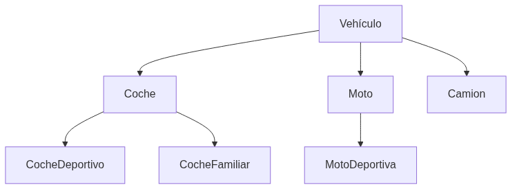
Atención
Cuando escribas una clase en Java, puedes hacer que herede de una determinada clase padre (mediante el uso de extends) o bien no indicar ninguna herencia. En tal caso, aunque no indiques explícitamente ningún tipo de herencia, el compilador asumirá entonces de manera implícita que tu clase hereda de la clase Object, que define e implementa el comportamiento común a todas las clases.
¿Herencia o composición?¶
Cuando escribas tus propias clases, debes intentar tener claro en qué casos utilizar la composición y cuándo la herencia:
- Composición: cuando una clase está formada por objetos de otras clases. En estos casos se incluyen objetos de esas clases, pero no necesariamente se comparten características con ellos (no se heredan características de esos objetos, sino que directamente se utilizarán sus atributos y sus métodos). Esos objetos incluidos no son más que atributos miembros de la clase que se está definiendo.
- Herencia: cuando una clase cumple todas las características de otra. En estos casos la clase derivada es una especialización (o particularización, extensión o restricción) de la clase base. Desde otro punto de vista se diría que la clase base es una generalización de las clases derivadas.
Por ejemplo, imagina que dispones de una clase Punto (ya la has utilizado en otras ocasiones) y decides definir una nueva clase llamada Círculo. Dado que un punto tiene como atributos sus coordenadas en plano (x1, y1), decides que es buena idea aprovechar esa información e incorporarla en la clase Circulo que estás escribiendo. Para ello utilizas la herencia, de manera que al derivar la clase Círculo de la clase Punto, tendrás disponibles los atributos x1 e y1. Ahora solo faltaría añadirle algunos atributos y métodos más como por ejemplo el radio del círculo, el cálculo de su área y su perímetro, etc.
En principio parece que la idea pueda funcionar pero es posible que más adelante, si continúas construyendo una jerarquía de clases, observes que puedas llegar a conclusiones incongruentes al suponer que un círculo es una especialización de un punto (un tipo de punto). ¿Todas aquellas figuras que contengan uno o varios puntos deberían ser tipos de punto? ¿Y si tienes varios puntos? ¿Cómo accedes a ellos? ¿Un rectángulo también tiene sentido que herede de un punto? No parece muy buena idea.
Parece que en este caso habría resultado mejor establecer una relación de composición. Analízalo detenidamente: ¿cuál de estas dos situaciones te suena mejor? 1. "Un círculo es un punto (su centro)", y por tanto heredará las coordenadas x1 e y1 que tiene todo punto. Además tendrá otras características específicas como el radio o métodos como el cálculo de la longitud de su perímetro o de su área. 2. "Un círculo tiene un punto (su centro)", junto con algunos atributos más como por ejemplo el radio. También tendrá métodos para el cálculo de su área o de la longitud de su perímetro.
Parece que en este caso la composición refleja con mayor fidelidad la relación que existe entre ambas clases. Normalmente suele ser suficiente con plantearse las preguntas "¿A es un tipo de B?" o "¿A contiene elementos de tipo B?".
Composición¶
Sintaxis de la composición.¶
Para indicar que una clase contiene objetos de otra clase no es necesaria ninguna sintaxis especial. Cada uno de esos objetos no es más que un atributo y, por tanto, debe ser declarado como tal:
1 2 3 4 5 6 | |
En unidades anteriores has trabajado con la clase Punto, que definía las coordenadas de un punto en el plano, y con la clase Rectangulo, que definía una figura de tipo rectángulo también en el plano a partir de dos de sus vértices (inferior izquierdo y superior derecho). Tal y como hemos formalizado ahora los tipos de relaciones entre clases, parece bastante claro que aquí tendrías un caso de composición: "un rectángulo contiene puntos". Por tanto, podrías ahora redefinir los atributos de la clase Rectangulo (cuatro números reales) como dos objetos de tipo Punto:
1 2 3 4 5 | |
Ahora los métodos de esta clase deberán tener en cuenta que ya no hay cuatro atributos de tipo double, sino dos atributos de tipo Punto (cada uno de los cuales contendrá en su interior dos atributos de tipo double).
Revisa el Ejemplo01 para ver composición de clases en Rectangulo.
Uso de la composición (I). Preservación de la ocultación.¶
Como ya has observado, la relación de composición no tiene más misterio a la hora de implementarse que simplemente declarar atributos de las clases que necesites dentro de la clase que estés diseñando.
Ahora bien, cuando escribas clases que contienen objetos de otras clases (lo cual será lo más habitual) deberás tener un poco de precaución con aquellos métodos que devuelvan información acerca de los atributos de la clase (métodos "consultores" o de tipo get).
Como ya viste en la unidad dedicada a la creación de clases, lo normal suele ser declarar los atributos como privados (o protegidos, como veremos un poco más adelante) para ocultarlos a los posibles clientes de la clase (otros objetos que en el futuro harán uso de la clase). Para que otros objetos puedan acceder a la información contenida en los atributos, o al menos a una parte de ella, deberán hacerlo a través de métodos que sirvan de interfaz, de manera que sólo se podrá tener acceso a aquella información que el creador de la clase haya considerado oportuna. Del mismo modo, los atributos solamente serán modificados desde los métodos de la clase, que decidirán cómo y bajo qué circunstancias deben realizarse esas modificaciones. Con esa metodología de acceso se tenía perfectamente separada la parte de manipulación interna de los atributos de la interfaz con el exterior.
Hasta ahora los métodos de tipo get devolvían tipos primitivos, es decir, copias del contenido (a veces con algún tipo de modificación o de formato) que había almacenado en los atributos, pero los atributos seguían "a salvo" como elementos privados de la clase. Pero, a partir de este momento, al tener objetos dentro de las clases y no sólo tipos primitivos, es posible que en un determinado momento interese devolver un objeto completo.
Ahora bien, cuando vayas a devolver un objeto habrás de obrar con mucha precaución. Si en un método de la clase devuelves directamente un objeto que es un atributo, estarás ofreciendo directamente una referencia a un objeto atributo que probablemente has definido como privado. ¡De esta forma estás volviendo a hacer público un atributo que inicialmente era privado!
Para evitar ese tipo de situaciones (ofrecer al exterior referencias a objetos privados) puedes optar por diversas alternativas, procurando siempre evitar la devolución directa de un atributo que sea un objeto:
- Una opción podría ser devolver siempre tipos primitivos.
- Dado que esto no siempre es posible, o como mínimo poco práctico, otra posibilidad es crear un nuevo objeto que sea una copia del atributo que quieres devolver y utilizar ese objeto como valor de retorno. Es decir, crear una copia del objeto especialmente para devolverlo. De esta manera, el código cliente de ese método podrá manipular a su antojo ese nuevo objeto, pues no será una referencia al atributo original, sino un nuevo objeto con el mismo contenido.
Por último, debes tener en cuenta que es posible que en algunos casos sí se necesite realmente la referencia al atributo original (algo muy habitual en el caso de atributos estáticos). En tales casos, no habrá problema en devolver directamente el atributo para que el código llamante (cliente) haga el uso que estime oportuno de él.
Devolución de objetos
Debes evitar por todos los medios la devolución de un atributo que sea un objeto (estarías dando directamente una referencia al atributo, visible y manipulable desde fuera), salvo que se trate de un caso en el que deba ser así.
Para entender estas situaciones un poco mejor, podemos volver a la clase Rectangulo y observar sus nuevos métodos de tipo get.
Revisa el Ejemplo02 para ver métodos get con composición.
Uso de la composición (II). Llamadas a constructores.¶
Otro factor que debes considerar, a la hora de escribir clases que contengan como atributos objetos de otras clases, es su comportamiento a la hora de instanciarse. Durante el proceso de creación de un objeto (constructor) de la clase contenedora habrá que tener en cuenta también la creación (llamadas a constructores) de aquellos objetos que son contenidos.
Atención
El constructor de la clase contenedora debe invocar a los constructores de las clases de los objetos contenidos.
En este caso hay que tener cuidado con las referencias a objetos que se pasan como parámetros para rellenar el contenido de los atributos. Es conveniente hacer una copia de esos objetos y utilizar esas copias para los atributos pues si se utiliza la referencia que se ha pasado como parámetro, el código cliente de la clase podría tener acceso a ella sin necesidad de pasar por la interfaz de la clase (volveríamos a dejar abierta una puerta pública a algo que quizá sea privado).
Además, si el objeto parámetro que se pasó al constructor formaba parte de otro objeto, esto podría ocasionar un desagradable efecto colateral si esos objetos son modificados en el futuro desde el código cliente de la clase, ya que no sabes de dónde provienen esos objetos, si fueron creados especialmente para ser usados por el nuevo objeto creado o si pertenecen a otro objeto que podría modificarlos más tarde. Es decir, correrías el riesgo de estar "compartiendo" esos objetos con otras partes del código, sin ningún tipo de control de acceso y con las nefastas consecuencias que eso podría tener: cualquier cambio de ese objeto afectaría a partes del programa supuestamente independientes, que entienden ese objeto como suyo.
Atención
En el fondo los objetos no son más que variables de tipo referencia a la zona de memoria en la que se encuentra toda la información del objeto en sí mismo. Esto es, puedes tener un único objeto y múltiples referencias a él. Pero sólo se trata de un objeto, y cualquier modificación desde una de sus referencias afectaría a todas las demás, pues estamos hablando del mismo objeto.
Recuerda también que sólo se crean objetos cuando se llama a un constructor (uso de new). Si realizas asignaciones o pasos de parámetros, no se están copiando o pasando copias de los objetos, sino simplemente de las referencias, y por tanto se tratará siempre del mismo objeto.
Se trata de un efecto similar al que sucedía en los métodos de tipo get, pero en este caso en sentido contrario (en lugar de que nuestra clase "regale" al exterior uno de sus atributos objeto mediante una referencia, en esta ocasión se "adueña" de un parámetro objeto que probablemente pertenezca a otro objeto y que es posible que el futuro haga uso de él).
Para entender mejor estos posibles efectos podemos continuar con el ejemplo de la clase Rectangulo que contiene en su interior dos objetos de la clase Punto. En los constructores del rectángulo habrá que incluir todo lo necesario para crear dos instancias de la clase Punto evitando las referencias a parámetros (haciendo copias).
Revisa el Ejemplo03 para ver constructores con composición.
Clases anidadas o internas.¶
En algunos lenguajes, es posible definir una clase dentro de otra clase (clases internas):
1 2 3 4 5 6 7 8 | |
Se pueden distinguir varios tipos de clases internas:
- Clases internas estáticas (o clases anidadas), declaradas con el modificador
static. - Clases internas miembro, conocidas habitualmente como clases internas. Declaradas al máximo nivel de la clase contenedora y no estáticas.
- Clases internas locales, que se declaran en el interior de un bloque de código (normalmente dentro de un método).
- Clases anónimas, similares a las internas locales, pero sin nombre (sólo existirá un objeto de ellas y, al no tener nombre, no tendrán constructores). Se suelen usar en la gestión de eventos en los interfaces gráficos.
- Aquí tienes algunos ejemplos:
1 2 3 4 5 6 7 8 9 | |
Las clases anidadas, como miembros de una clase que son (miembros de ClaseContenedora), pueden ser declaradas con los modificadores public, protected, private o de paquete, como el resto de miembros.
Las clases internas (no estáticas) tienen acceso a otros miembros de la clase dentro de la que está definida aunque sean privados (se trata en cierto modo de un miembro más de la clase), mientras que las anidadas (estáticas) no.
Las clases internas se utilizan en algunos casos para:
- Agrupar clases que sólo tiene sentido que existan en el entorno de la clase en la que han sido definidas, de manera que se oculta su existencia al resto del código.
- Incrementar el nivel de encapsulación y ocultamiento.
- Proporcionar un código fuente más legible y fácil de mantener (el código de las clases internas y anidadas está más cerca de donde es usado).
En Java es posible definir clases internas y anidadas, permitiendo todas esas posibilidades. Aunque para lo ejemplos con los que vas a trabajar no las vas a necesitar por ahora.
Herencia¶
Como ya has estudiado, la herencia es el mecanismo que permite definir una nueva clase a partir de otra, pudiendo añadir nuevas características, sin tener que volver a escribir todo el código de la clase base.
La clase de la que se hereda suele ser llamada clase base, clase padre o superclase (de la que hereda otra clase. Se heredarán todas aquellas características que la clase padre permita). A la clase que hereda se le suele llamar clase hija, clase derivada o subclase (que hereda de otra clase. Se heredan todas aquellas características que la clase padre permita).
Una clase derivada puede ser a su vez clase padre de otra que herede de ella y así sucesivamente dando lugar a una jerarquía de clases, excepto aquellas que estén en la parte de arriba de la jerarquía (sólo serán clases padre) o en la parte de abajo (sólo serán clases hijas).
Una clase hija no tiene acceso a los miembros privados de su clase padre, tan solo a los públicos (como cualquier parte del código tendría) y los protegidos (a los que sólo tienen acceso las clases derivadas y las del mismo paquete). Aquellos miembros que sean privados en la clase base también habrán sido heredados, pero el acceso a ellos estará restringido al propio funcionamiento de la superclase y sólo se podrá acceder a ellos si la superclase ha dejado algún medio indirecto para hacerlo (por ejemplo a través de algún método).
Todos los miembros de la superclase, tanto atributos como métodos, son heredados por la subclase. Algunos de estos miembros heredados podrán ser redefinidos o sobrescritos (overriden) y también podrán añadirse nuevos miembros. De alguna manera podría decirse que estás "ampliando" la clase base con características adicionales o modificando algunas de ellas (proceso de especialización).
Recuerda
Una clase derivada extiende la funcionalidad de la clase base sin tener que volver a escribir el código de la clase base.
Sintaxis de la herencia.¶
En Java la herencia se indica mediante la palabra reservada extends:
1 2 3 4 5 6 7 8 9 | |
Imagina que tienes una clase Persona que contiene atributos como nombre, apellidos y fecha de nacimiento:
1 2 3 4 5 6 | |
Es posible que, más adelante, necesites una clase Alumno que compartirá esos atributos (dado que todo alumno es una persona, pero con algunas características específicas que lo especializan). En tal caso tendrías la posibilidad de crear una clase Alumno que repitiera todos esos atributos o bien heredar de la clase Persona:
1 2 3 4 5 | |
A partir de ahora, un objeto de la clase Alumno contendrá los atributos grupo y notaMedia (propios de la clase Alumno), pero también nombre, apellidos y fechaNacim (propios de su clase base Persona y que por tanto ha heredado).
Revisa el Ejemplo04 para ver herencia con la clase Profesor.
Acceso a miembros heredados.¶
Como ya has visto anteriormente, no es posible acceder a miembros privados de una superclase. Para poder acceder a ellos podrías pensar en hacerlos públicos, pero entonces estarías dando la opción de acceder a ellos a cualquier objeto externo y es probable que tampoco sea eso lo deseable. Para ello se inventó el modificador protected (protegido) que permite el acceso desde clases heredadas, pero no desde fuera de las clases (estrictamente hablando, desde fuera del paquete), que serían como miembros privados.
En la unidad dedicada a la utilización de clases ya estudiaste los posibles modificadores de acceso que podía tener un miembro: sin modificador (acceso de paquete), público, privado o protegido.
Aquí tienes de nuevo el resumen:
| modificador | Misma clase | Mismo paquete | Subclase | Otro paquete |
|---|---|---|---|---|
public | ✔ | ✔ | ✔ | ✔ |
protected | ✔ | ✔ | ✔ | ❌ |
Sin modificador (package) | ✔ | ✔ | ❌ | ❌ |
private | ✔ | ❌ | ❌ | ❌ |
Recuerda
¡Recuerda que los modificadores de acceso son excluyentes! Sólo se puede utilizar uno de ellos en la declaración de un atributo.
Si en el ejemplo anterior de la clase Persona se hubieran definido sus atributos como private:
1 2 3 4 5 | |
Al definir la clase Alumno como heredera de Persona, no habrías tenido acceso a esos atributos, pudiendo ocasionar un grave problema de operatividad al intentar manipular esa información. Por tanto, en estos casos lo más recomendable habría sido declarar esos atributos como protected o bien sin modificador (para que también tengan acceso a ellos otras clases del mismo paquete, si es que se considera oportuno):
1 2 3 4 5 | |
private vs protected
Sólo en aquellos casos en los que se desea explícitamente que un miembro de una clase no pueda ser accesible desde una clase derivada debería utilizarse el modificador private. En el resto de casos es recomendable utilizar protected, o bien no indicar modificador (acceso a nivel de paquete).
Revisa el Ejemplo05 para ver el modificador protected.
Utilización de miembros heredados (I). Atributos.¶
Los atributos heredados por una clase son, a efectos prácticos, iguales que aquellos que sean definidos específicamente en la nueva clase derivada.
En el ejemplo anterior la clase Persona disponía de tres atributos y la clase Alumno, que heredaba de ella, añadía dos atributos más. Desde un punto de vista funcional podrías considerar que la clase Alumno tiene cinco atributos: tres por ser Persona (nombre, apellidos, fecha de nacimiento) y otros dos más por ser Alumno (grupo y nota media).
Revisa el Ejemplo06 para ver getters y setters en herencia.
Utilización de miembros heredados (II). Métodos.¶
Del mismo modo que se heredan los atributos, también se heredan los métodos, convirtiéndose a partir de ese momento en otros métodos más de la clase derivada, junto a los que hayan sido definidos específicamente.
En el ejemplo de la clase Persona, si dispusiéramos de métodos get y set para cada uno de sus tres atributos (nombre, apellidos, fechaNacim), tendrías seis métodos que podrían ser heredados por sus clases derivadas. Podrías decir entonces que la clase Alumno, derivada de Persona, tiene diez métodos:
- Seis por ser Persona (
getNombre,getApellidos,getFechaNacim,setNombre,setApellidos,setFechaNacim). - Oros cuatro más por ser Alumno (
getGrupo,setGrupo,getNotaMedia,setNotaMedia).
Sin embargo, sólo tendrías que definir esos cuatro últimos (los específicos) pues los genéricos ya los has heredado de la superclase.
Revisa el Ejemplo07 para ver getters y setters heredados.
Redefinición de métodos heredados.¶
Una clase puede redefinir algunos de los métodos que ha heredado de su clase base. En tal caso, el nuevo método (especializado) sustituye al heredado. Este procedimiento también es conocido como de sobrescritura de métodos.
En cualquier caso, aunque un método sea sobrescrito o redefinido, aún es posible acceder a él a través de la referencia super, aunque sólo se podrá acceder a métodos de la clase padre y no a métodos de clases superiores en la jerarquía de herencia.
Los métodos redefinidos pueden ampliar su accesibilidad con respecto a la que ofrezca el método original de la superclase, pero nunca restringirla. Por ejemplo, si un método es declarado como protected o de paquete en la clase base, podría ser redefinido como public en una clase derivada. Los métodos estáticos o de clase no pueden ser sobrescritos. Los originales de la clase base permanecen inalterables a través de toda la jerarquía de herencia.
En el ejemplo de la clase Alumno, podrían redefinirse algunos de los métodos heredados. Por ejemplo, imagina que el método getApellidos devuelva la cadena "Alumno:" junto con los apellidos del alumno. En tal caso habría que rescribir ese método para realizara esa modificación:
1 2 3 | |
Cuando sobrescribas un método heredado en Java puedes incluir la anotación @Override. Esto indicará al compilador que tu intención es sobrescribir el método de la clase padre. De este modo, si te equivocas (por ejemplo, al escribir el nombre del método) y no lo estás realmente sobrescribiendo, el compilador producirá un error y así podrás darte cuenta del fallo. En cualquier caso, no es necesario indicar @Override, pero puede resultar de ayuda a la hora de localizar este tipo de errores (crees que has sobrescrito un método heredado y al confundirte en una letra estás realmente creando un nuevo método diferente). En el caso del ejemplo anterior quedaría:
1 2 | |
Revisa el Ejemplo08 para ver redefinición de métodos.
Ampliación de métodos heredados.¶
Hasta ahora, has visto que para redefinir o sustituir un método de una superclase es suficiente con crear otro método en la subclase que tenga el mismo nombre que el método que se desea sobrescribir. Pero, en otras ocasiones, puede que lo que necesites no sea sustituir completamente el comportamiento del método de la superclase, sino simplemente ampliarlo.
Para poder hacer esto necesitas poder preservar el comportamiento antiguo (el de la superclase) y añadir el nuevo (el de la subclase). Para ello, puedes invocar desde el método "ampliador" de la clase derivada al método "ampliado" de la clase superior (teniendo ambos métodos el mismo nombre). ¿Cómo se puede conseguir eso? Puedes hacerlo mediante el uso de la referencia super.
La palabra reservada super es una referencia a la clase padre de la clase en la que te encuentres en cada momento (es algo similar a this, que representaba una referencia a la clase actual). De esta manera, podrías invocar a cualquier método de tu superclase (si es que se tiene acceso a él).
Por ejemplo, imagina que la clase Persona dispone de un método que permite mostrar el contenido de algunos datos personales de los objetos de este tipo (nombre, apellidos, etc.). Por otro lado, la clase Alumno también necesita un método similar, pero que muestre también su información especializada (grupo, nota media, etc.). ¿Cómo podrías aprovechar el método de la superclase para no tener que volver a escribir su contenido en la subclase?
Podría hacerse de una manera tan sencilla como la siguiente:
Este tipo de ampliaciones de métodos resultan especialmente útiles por ejemplo en el caso de los constructores, donde se podría ir llamando a los constructores de cada superclase encadenadamente hasta el constructor de la clase en la cúspide de la jerarquía (el constructor de la clase Object).
Revisa el Ejemplo09 para ver ampliación de métodos con super.
Constructores y herencia.¶
Recuerda que cuando estudiaste los constructores viste que un constructor de una clase puede llamar a otro constructor de la misma clase, previamente definido, a través de la referencia this. En estos casos, la utilización de this sólo podía hacerse en la primera línea de código del constructor.
Como ya has visto, un constructor de una clase derivada puede hacer algo parecido para llamar al constructor de su clase base mediante el uso de la palabra super. De esta manera, el constructor de una clase derivada puede llamar primero al constructor de su superclase para que inicialice los atributos heredados y posteriormente se inicializarán los atributos específicos de la clase: los no heredados. Nuevamente, esta llamada también debe ser la primera sentencia de un constructor (con la única excepción de que exista una llamada a otro constructor de la clase mediante this).
Si no se incluye una llamada a super() dentro del constructor, el compilador incluye automáticamente una llamada al constructor por defecto de clase base (llamada a super()). Esto da lugar a una llamada en cadena de constructores de superclase hasta llegar a la clase más alta de la jerarquía (que en Java es la clase Object).
En el caso del constructor por defecto (el que crea el compilador si el programador no ha escrito ninguno), el compilador añade lo primero de todo, antes de la inicialización de los atributos a sus valores por defecto, una llamada al constructor de la clase base mediante la referencia super.
A la hora de destruir un objeto (método finalize) es importante llamar a los finalizadores en el orden inverso a como fueron llamados los constructores (primero se liberan los recursos de la clase derivada y después los de la clase base mediante la llamada super.finalize()).
Si la clase Persona tuviera un constructor de este tipo:
1 2 3 4 5 | |
Podrías llamarlo desde un constructor de una clase derivada (por ejemplo Alumno) de la siguiente forma:
1 2 3 4 5 | |
En realidad se trata de otro recurso más para optimizar la reutilización de código, en este caso el del constructor, que aunque no es heredado, sí puedes invocarlo para no tener que reescribirlo.
Revisa el Ejemplo10 para ver constructores y llamada a super.
Creación y utilización de clases derivadas.¶
Ya has visto cómo crear una clase derivada, cómo acceder a los miembros heredados de las clases superiores, cómo redefinir algunos de ellos e incluso cómo invocar a un constructor de la superclase. Ahora se trata de poner en práctica todo lo que has aprendido para que puedas crear tus propias jerarquías de clases, o basarte en clases que ya existan en Java para heredar de ellas, y las utilices de manera adecuada para que tus aplicaciones sean más fáciles de escribir y mantener.
Herencia = menos código
La idea de la herencia no es complicar los programas, sino todo lo contrario: simplificarlos al máximo. Procurar que haya que escribir la menor cantidad posible de código repetitivo e intentar facilitar en lo posible la realización de cambios (bien para corregir errores bien para incrementar la funcionalidad).
La clase Object en Java.¶
Todas las clases en Java son descendentes (directos o indirectos) de la clase Object. Esta clase define los estados y comportamientos básicos que deben tener todos los objetos. Entre estos comportamientos, se encuentran:
- La posibilidad de compararse.
- La capacidad de convertirse a cadenas.
- La habilidad de devolver la clase del objeto.
Entre los métodos que incorpora la clase Object y que por tanto hereda cualquier clase en Java tienes:
Principales métodos de la clase Object:
| Método | Descripción |
|---|---|
Object() | Constructor. |
clone() | Método clonador: crea y devuelve una copia del objeto ("clona" el objeto). |
boolean equals(Object obj) | Indica si el objeto pasado como parámetro es igual a este objeto. |
void finalize() | Método llamado por el recolector de basura cuando éste considera que no queda ninguna referencia a este objeto en el entorno de ejecución. |
int hashCode() | Devuelve un código hash para el objeto. |
toString() | Devuelve una representación del objeto en forma de String. |
La clase Objectrepresenta la superclase que se encuentra en la cúspide de la jerarquía de herencia en Java. Cualquier clase (incluso las que tú implementes) acaban heredando de ella.
Herencia múltiple.¶
En determinados casos podrías considerar la posibilidad de que se necesite heredar de más de una clase, para así disponer de los miembros de dos (o más) clases disjuntas (que no derivan una de la otra). La herencia múltiple permite hacer eso: recoger las distintas características (atributos y métodos) de clases diferentes formando una nueva clase derivada de varias clases base.
El problema en estos casos es la posibilidad que existe de que se produzcan ambigüedades, así, si tuviéramos miembros con el mismo identificador en clases base diferentes, en tal caso, ¿qué miembro se hereda? Para evitar esto, los compiladores suelen solicitar que ante casos de ambigüedad, se especifique de manera explícita la clase de la cual se quiere utilizar un determinado miembro que pueda ser ambiguo.
Ahora bien, la posibilidad de herencia múltiple no está disponible en todos los lenguajes orientados a objetos, ¿lo estará en Java? La respuesta es negativa.
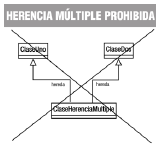
Herencia múltiple
En Java no existe la herencia múltiple de clases.
Clases Abstractas¶
En determinadas ocasiones, es posible que necesites definir una clase que represente un concepto lo suficientemente abstracto como para que nunca vayan a existir instancias de ella (objetos). ¿Tendría eso sentido? ¿Qué utilidad podría tener?
Imagina una aplicación para un centro educativo que utilice las clases de ejemplo Alumno y Profesor, ambas subclases de Persona. Es más que probable que esa aplicación nunca llegue a necesitar objetos de la clase Persona, pues serían demasiado genéricos como para poder ser utilizados (no contendrían suficiente información específica). Podrías llegar entonces a la conclusión de que la clase Persona ha resultado de utilidad como clase base para construir otras clases que hereden de ella, pero no como una clase instanciable de la cual vayan a existir objetos. A este tipo de clases se les llama clases abstractas.
Clases abstractas
En algunos casos puede resultar útil disponer de clases que nunca serán instanciadas, sino que proporcionan un marco o modelo a seguir por sus clases derivadas dentro de una jerarquía de herencia. Son las clases abstractas.
La posibilidad de declarar clases abstractas es una de las características más útiles de los lenguajes orientados a objetos, pues permiten dar unas líneas generales de cómo es una clase sin tener que implementar todos sus métodos o implementando solamente algunos de ellos. Esto resulta especialmente útil cuando las distintas clases derivadas deban proporcionar los mismos métodos indicados en la clase base abstracta, pero su implementación sea específica para cada subclase.
Imagina que estás trabajando en un entorno de manipulación de objetos gráficos y necesitas trabajar con líneas, círculos, rectángulos, etc. Estos objetos tendrán en común algunos atributos que representen su estado (ubicación, color del contorno, color de relleno, etc.) y algunos métodos que modelen su comportamiento (dibujar, rellenar con un color, escalar, desplazar, rotar, etc.). Algunos de ellos serán comunes para todos ellos (por ejemplo la ubicación o el desplazamiento) y sin embargo otros (como por ejemplo dibujar) necesitarán una implementación específica dependiendo del tipo de objeto. Pero, en cualquier caso, todos ellos necesitan esos métodos (tanto un círculo como un rectángulo necesitan el método dibujar, aunque se lleven a cabo de manera diferente). En este caso resultaría muy útil disponer de una clase abstracta objeto gráfico donde se definirían las líneas generales (algunos atributos concretos comunes, algunos métodos concretos comunes implementados y algunos métodos genéricos comunes sin implementar) de un objeto gráfico y más adelante, según se vayan definiendo clases especializadas (líneas, círculos, rectángulos), se irán concretando en cada subclase aquellos métodos que se dejaron sin implementar en la clase abstracta.
Declaración de una clase abstracta.¶
Ya has visto que una clase abstracta es una clase que no se puede instanciar, es decir, que no se pueden crear objetos a partir de ella. La idea es permitir que otras clases deriven de ella, proporcionando un modelo genérico y algunos métodos de utilidad general. Las clases abstractas se declaran mediante el modificador abstract:
1 2 3 | |
Métodos abstractos
Una clase puede contener en su interior métodos declarados como abstract (métodos para los cuales sólo se indica la cabecera, pero no se proporciona su implementación). En tal caso, la clase tendrá que ser necesariamente también abstract. Esos métodos tendrán que ser posteriormente implementados en sus clases derivadas.
Por otro lado, una clase también puede contener métodos totalmente implementados (no abstractos), los cuales serán heredados por sus clases derivadas y podrán ser utilizados sin necesidad de definirlos (pues ya están implementados).
Cuando trabajes con clases abstractas debes tener en cuenta:
- Una clase abstracta sólo puede usarse para crear nuevas clases derivadas. No se puede hacer un new de una clase abstracta. Se produciría un error de compilación.
- Una clase abstracta puede contener métodos totalmente definidos (no abstractos) y métodos sin definir (métodos abstractos).
Revisa el Ejemplo11 para ver clases abstractas.
Métodos abstractos.¶
Un método abstracto es un método declarado en una clase para el cual esa clase no proporciona la implementación. Si una clase dispone de al menos un método abstracto se dice que es una clase abstracta. Toda clase que herede (sea subclase) de una clase abstracta debe implementar todos los métodos abstractos de su superclase o bien volverlos a declarar como abstractos (y por tanto también sería abstracta). Para declarar un método abstracto en Java se utiliza el modificador abstract) es un método cuya implementación no se define, sino que se declara únicamente su interfaz (cabecera) para que su cuerpo sea implementado más adelante en una clase derivada.
Un método se declara como abstracto mediante el uso del modificador abstract (como en las clases abstractas):
1 | |
Estos métodos tendrán que ser obligatoriamente redefinidos (en realidad "definidos", pues aún no tienen contenido) en las clases derivadas. Si en una clase derivada se deja algún método abstracto sin implementar, esa clase derivada será también una clase abstracta.
Clase abstracta?
Cuando una clase contiene un método abstracto tiene que declararse como abstracta obligatoriamente.
Imagina que tienes una clase Empleado genérica para diversos tipos de empleado y tres clases derivadas: EmpleadoFijo (tiene un salario fijo más ciertos complementos), EmpleadoTemporal (salario fijo más otros complementos diferentes) y EmpleadoComercial (una parte de salario fijo y unas comisiones por cada operación). La clase Empleado podría contener un método abstracto calcularNomina, pues sabes que se método será necesario para cualquier tipo de empleado (todo empleado cobra una nómina). Sin embargo el cálculo en sí de la nómina será diferente si se trata de un empleado fijo, un empleado temporal o un empleado comercial, y será dentro de las clases especializadas de Empleado (EmpleadoFijo ̧ EmpleadoTemporal, EmpleadoComercial) donde se implementen de manera específica el cálculo de las mismas.
Debes tener en cuenta al trabajar con métodos abstractos:
- Un método abstracto implica que la clase a la que pertenece tiene que ser abstracta, pero eso no significa que todos los métodos de esa clase tengan que ser abstractos.
- Un método abstracto no puede ser privado (no se podría implementar, dado que las clases derivadas no tendrían acceso a él).
- Los métodos abstractos no pueden ser estáticos, pues los métodos estáticos no pueden ser redefinidos (y los métodos abstractos necesitan ser redefinidos).
Revisa el Ejemplo12 para ver métodos abstractos.
Clases y métodos finales.¶
En unidades anteriores has visto el modificador final, aunque sólo lo has utilizado por ahora para atributos y variables (por ejemplo para declarar atributos constantes, que una vez que toman un valor ya no pueden ser modificados). Pero este modificador también puede ser utilizado con clases y con métodos (con un comportamiento que no es exactamente igual, aunque puede encontrarse cierta analogía: no se permite heredar o no se permite redefinir).
Una clase declarada como final no puede ser heredada, es decir, no puede tener clases derivadas. La jerarquía de clases a la que pertenece acaba en ella (no tendrá clases hijas):
1 | |
Un método también puede ser declarado como final, en tal caso, ese método no podrá ser redefinido en una clase derivada:
1 | |
Si intentas redefinir un método final en una subclase se producirá un error de compilación.
Distintos contextos en los que puede aparecer el modificador final:
| Lugar | Función |
|---|---|
| Como modificador de clase. | La clase no puede tener subclases. |
| Como modificador de atributo. | El atributo no podrá ser modificado una vez que tome un valor. Sirve para definir constantes. |
| Como modificador al declarar un método | El método no podrá ser redefinido en una clase derivada. |
| Como modificador al declarar una variable referencia. | Una vez que la variable tome un valor referencia (un objeto), no se podrá cambiar. La variable siempre apuntará al mismo objeto, lo cual no quiere decir que ese objeto no pueda ser modificado internamente a través de sus métodos. Pero la variable no podrá apuntar a otro objeto diferente. |
| Como modificador en un parámetro de un método | El valor del parámetro (ya sea un tipo primitivo o una referencia) no podrá modificarse dentro del código del método. |
Veamos un ejemplo de cada posibilidad: 1. Modificador de una clase.
1 2 3 | |
- Modificador de un atributo.
1 2 3 4 5 6 7 8 | |
- Modificador de un método.
1 2 3 | |
- Modificador en una variable referencia.
1 2 3 4 5 | |
- Modificador en un parámetro de un método.
1 2 3 4 | |
Interfaces¶
Has visto cómo la herencia permite definir especializaciones (o extensiones) de una clase base que ya existe sin tener que volver a repetir de todo el código de ésta. Este mecanismo da la oportunidad de que la nueva clase especializada (o extendida) disponga de toda la interfaz que tiene su clase base.
También has estudiado cómo los métodos abstractos permiten establecer una interfaz para marcar las líneas generales de un comportamiento común de superclase que deberían compartir de todas las subclases.
Si llevamos al límite esta idea de interfaz, podrías llegar a tener una clase abstracta donde todos sus métodos fueran abstractos. De este modo estarías dando únicamente el marco de comportamiento, sin ningún método implementado, de las posibles subclases que heredarán de esa clase abstracta. La idea de una interfaz (o interface) es precisamente ésa: disponer de un mecanismo que permita especificar cuál debe ser el comportamiento que deben tener todos los objetos que formen parte de una determinada clasificación (no necesariamente jerárquica).
Una interfaz consiste principalmente en una lista de declaraciones de métodos sin implementar, que caracterizan un determinado comportamiento. Si se desea que una clase tenga ese comportamiento, tendrá que implementar esos métodos establecidos en la interfaz. En este caso no se trata de una relación de herencia (la clase A es una especialización de la clase B, o la subclase A es del tipo de la superclase B), sino más bien una relación "de implementación de comportamientos" (la clase A implementa los métodos establecidos en la interfaz B, o los comportamientos indicados por B son llevados a cabo por A; pero no que A sea de clase B).
Imagina que estás diseñando una aplicación que trabaja con clases que representan distintos tipos de animales. Algunas de las acciones que quieres que lleven a cabo están relacionadas con el hecho de que algunos animales sean depredadores (por ejemplo: observar una presa, perseguirla, comérsela, etc.) o sean presas (observar, huir, esconderse, etc.). Si creas la clase León, esta clase podría implementar una interfaz Depredador, mientras que otras clases como Gacela implementarían las acciones de la interfaz Presa. Por otro lado, podrías tener también el caso de la clase Rana, que implementaría las acciones de la interfaz Depredador (pues es cazador de pequeños insectos), pero también la de Presa (pues puede ser cazado y necesita las acciones necesarias para protegerse).
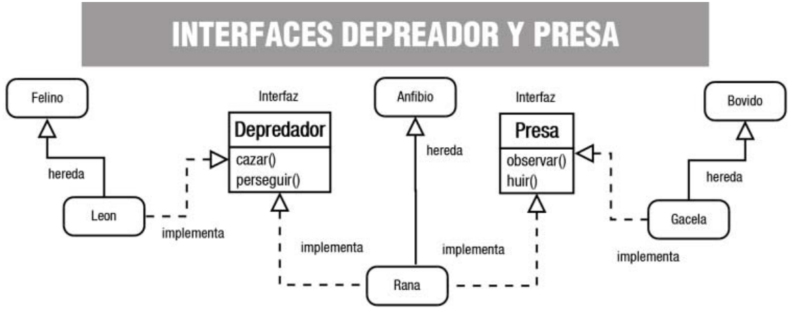
Concepto de interfaz.¶
Una interfaz en Java consiste esencialmente en una lista de declaraciones de métodos sin implementar, junto con un conjunto de constantes.
Estos métodos sin implementar indican un comportamiento, un tipo de conducta, aunque no especifican cómo será ese comportamiento (implementación), pues eso dependerá de las características específicas de cada clase que decida implementar esa interfaz. Podría decirse que una interfaz se encarga de establecer qué comportamientos hay que tener (qué métodos), pero no dice nada de cómo deben llevarse a cabo esos comportamientos (implementación). Se indica sólo la forma, no la implementación.
En cierto modo podrías imaginar el concepto de interfaz como un guión que dice: "éste es el protocolo de comunicación que deben presentar todas las clases que implementen esta interfaz". Se proporciona una lista de métodos públicos y, si quieres dotar a tu clase de esa interfaz, tendrás que definir todos y cada uno de esos métodos públicos.
En conclusión: una interfaz se encarga de establecer unas líneas generales sobre los comportamientos (métodos) que deberían tener los objetos de toda clase que implemente esa interfaz, es decir, que no indican lo que el objeto es (de eso se encarga la clase y sus superclases), sino acciones (capacidades) que el objeto debería ser capaz de realizar. Es por esto que el nombre de muchas interfaces en Java termina con sufijos del tipo "‐able", "‐or", "‐ente" y cosas del estilo, que significan algo así como capacidad o habilidad para hacer o ser receptores de algo (configurable, serializable, modificable, clonable, ejecutable, administrador, servidor, buscador, etc.), dando así la idea de que se tiene la capacidad de llevar a cabo el conjunto de acciones especificadas en la interfaz.
Imagínate por ejemplo la clase Coche, subclase de Vehículo. Los coches son vehículos a motor, lo cual implica una serie de acciones como, por ejemplo, arrancar el motor o detener el motor. Esa acción no la puedes heredar de Vehículo, pues no todos los vehículos tienen porqué ser a motor (piensa por ejemplo en una clase Bicicleta), y no puedes heredar de otra clase pues ya heredas de Vehículo. Una solución podría ser crear una interfaz Arrancable, que proporcione los métodos típicos de un objeto a motor (no necesariamente vehículos). De este modo la clase Coche sigue siendo subclase de Vehículo, pero también implementaría los comportamientos de la interfaz Arrancable, los cuales podrían ser también implementados por otras clases, hereden o no de Vehículo (por ejemplo una clase Motocicleta o bien una clase Motosierra). La clase Coche implementará su método arrancar de una manera, la clase Motocicleta lo hará de otra (aunque bastante parecida) y la clase Motosierra de otra forma probablemente muy diferente, pero todos tendrán su propia versión del método arrancar como parte de la interfaz Arrancable.
Según esta concepción, podrías hacerte la siguiente pregunta: ¿podrá una clase implementar varias interfaces? La respuesta en este caso sí es afirmativa.
Importante
Una clase puede adoptar distintos modelos de comportamiento establecidos en diferentes interfaces. Es decir una clase puede implementar varias interfaces.
¿Clase abstracta o interfaz?¶
Observando el concepto de interfaz que se acaba de proponer, podría caerse en la tentación de pensar que es prácticamente lo mismo que una clase abstracta en la que todos sus métodos sean abstractos.
Es cierto que en ese sentido existe un gran parecido formal entre una clase abstracta y una interfaz, pudiéndose en ocasiones utilizar indistintamente una u otra para obtener un mismo fin. Pero, a pesar de ese gran parecido, existen algunas diferencias, no sólo formales, sino también conceptuales, muy importantes:
- Una clase no puede heredar de varias clases, aunque sean abstractas (herencia múltiple). Sin embargo sí puede implementar una o varias interfaces y además seguir heredando de una clase.
- Una interfaz no puede definir métodos (no implementa su contenido), tan solo los declara o enumera.
- Una interfaz puede hacer que dos clases tengan un mismo comportamiento independientemente de sus ubicaciones en una determinada jerarquía de clases (no tienen que heredar las dos de una misma superclase, pues no siempre es posible según la naturaleza y propiedades de cada clase).
- Una interfaz permite establecer un comportamiento de clase sin apenas dar detalles, pues esos detalles aún no son conocidos (dependerán del modo en que cada clase decida implementar la interfaz).
- Las interfaces tienen su propia jerarquía, diferente e independiente de la jerarquía de clases.
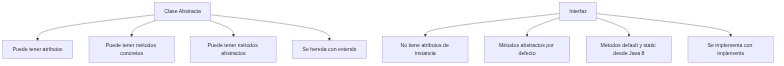
De todo esto puede deducirse que una clase abstracta proporciona una interfaz disponible sólo a través de la herencia. Sólo quien herede de esa clase abstracta dispondrá de esa interfaz. Si una clase no pertenece a esa misma jerarquía (no hereda de ella) no podrá tener esa interfaz. Eso significa que para poder disponer de la interfaz podrías:
- Volver a escribirla para esa jerarquía de clases. Lo cual no parece una buena solución.
- Hacer que la clase herede de la superclase que proporciona la interfaz que te interesa, sacándola de su jerarquía original y convirtiéndola en clase derivada de algo de lo que conceptualmente no debería ser una subclase. Es decir, estarías forzando una relación "es un" cuando en realidad lo más probable es que esa relación no exista. Tampoco parece la mejor forma de resolver el problema.
Sin embargo, una interfaz sí puede ser implementada por cualquier clase, permitiendo que clases que no tengan ninguna relación entre sí (pertenecen a distintas jerarquías) puedan compartir un determinado comportamiento (una interfaz) sin tener que forzar una relación de herencia que no existe entre ellas.
A partir de ahora podemos hablar de otra posible relación entre clases: la de compartir un determinado comportamiento (interfaz). Dos clases podrían tener en común un determinado conjunto de comportamientos sin que necesariamente exista una relación jerárquica entre ellas. Tan solo cuando haya realmente una relación de tipo "es un" se producirá herencia.
¿Interfaz o clase abstracta?
Si sólo vas a proporcionar una lista de métodos abstractos (interfaz), sin definiciones de métodos ni atributos de objeto, suele ser recomendable definir una interfaz antes que clase abstracta. Es más, cuando vayas a definir una supuesta clase base, puedes comenzar declarándola como interfaz y sólo cuando veas que necesitas definir métodos o variables miembro, puedes entonces convertirla en clase abstracta (no instanciable) o incluso en una clase instanciable.
Definición de interfaces.¶
La declaración de una interfaz en Java es similar a la declaración de una clase, aunque con algunas variaciones:
- Se utiliza la palabra reservada
interfaceen lugar declass. - Puede utilizarse el modificador
public. Si incluye este modificador la interfaz debe tener el mismo nombre que el archivo.javaen el que se encuentra (exactamente igual que sucedía con las clases). Si no se indica el modificadorpublic, el acceso será por omisión o "de paquete" (como sucedía con las clases). - Todos los miembros de la interfaz (atributos y métodos) son
publicde manera implícita. No es necesario indicar el modificadorpublic, aunque puede hacerse. - Todos los atributos son de tipo
finalypublic(tampoco es necesario especificarlo), es decir, constantes y públicos. Hay que darles un valor inicial. - Todos los métodos son abstractos también de manera implícita (tampoco hay que indicarlo). No tienen cuerpo, tan solo la cabecera.
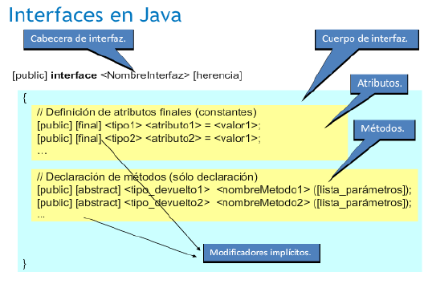
Como puedes observar, una interfaz consiste esencialmente en una lista de atributos finales (constantes) y métodos abstractos (sin implementar). Su sintaxis quedaría entonces:
1 2 3 4 5 6 7 8 | |
Si te fijas, la declaración de los métodos termina en punto y coma, pues no tienen cuerpo, al igual que sucede con los métodos abstractos de las clases abstractas. El ejemplo de la interfaz Depredador que hemos visto antes podría quedar entonces así:
1 2 3 4 5 | |
Serán las clases que implementen esta interfaz (León, Leopardo, Cocodrilo, Rana, Lagarto, Hombre, etc.) las que definan cada uno de los métodos por dentro.
Revisa el Ejemplo13 para ver la creación de una interfaz.
Implementación de interfaces.¶
Como ya has visto, todas las clases que implementan una determinada interfaz están obligadas a proporcionar una definición (implementación) de los métodos de esa interfaz, adoptando el modelo de comportamiento propuesto por ésta.
Dada una interfaz, cualquier clase puede especificar dicha interfaz mediante el mecanismo denominado implementación de interfaces. Para ello se utiliza la palabra reservada implements:
1 | |
De esta manera, la clase está diciendo algo así como "la interfaz indica los métodos que debo implementar, pero voy a ser yo (la clase) quien los implemente".
Es posible indicar varios nombres de interfaces separándolos por comas:
1 | |
Cuando una clase implementa una interfaz, tiene que redefinir sus métodos nuevamente con acceso público. Con otro tipo de acceso se producirá un error de compilación. Es decir, que del mismo modo que no se podían restringir permisos de acceso en la herencia de clases, tampoco se puede hacer en la implementación de interfaces.
Una vez implementada una interfaz en una clase, los métodos de esa interfaz tienen exactamente el mismo tratamiento que cualquier otro método, sin ninguna diferencia, pudiendo ser invocados, heredados, redefinidos, etc.
En el ejemplo de los depredadores, al definir la clase León, habría que indicar que implementa la interfaz Depredador:
1 | |
En realidad la definición completa de la clase Leon debería ser:
1 | |
El orden importa
El orden de extends e implements es importante, primero se define la herencia y a continuación la interfaces que implementa.
Y en su interior habría que implementar aquellos métodos que contenga la interfaz:
1 2 3 4 | |
En el caso de clases que pudieran ser a la vez Depredador y Presa, tendrían que implementar ambas interfaces, como podría suceder con la clase Rana:
1 | |
Que de manera completa quedaría:
1 | |
Y en su interior habría que implementar aquellos métodos que contengan ambas interfaces, tanto las de Depredador (localizar, cazar, etc.) como las de Presa (observar, huir, etc.).
Revisa el Ejemplo14 para ver implementación de interfaces.
Revisa el Ejemplo15 para ver una clase que implementa varias interfaces.
Un ejemplo de implementación de interfaces: la interfaz Series.¶
En la forma tradicional de una interfaz, los métodos se declaran utilizando solo su tipo de devolución y firma. Son, esencialmente, métodos abstractos. Por lo tanto, cada clase que incluye dicha interfaz debe implementar todos sus métodos.
Recuerda
En una interfaz, los métodos son implícitamente públicos.
Recuerda
Las variables declaradas en una interfaz no son variables de instancia. En cambio, son implícitamente public, final, y static, y deben inicializarse. Por lo tanto, son esencialmente constantes.
Aquí hay un ejemplo de una definición de interfaz. Especifica la interfaz a una clase que genera una serie de números.
Consulta el Ejemplo19 para ver el código completo de la interfaz Series y sus implementaciones DeDos, SeriesDemo y DeTres.
Esta interfaz se declara pública para que pueda ser implementada por código en cualquier paquete.
Los métodos que implementan una interfaz deben declararse públicos. Además, el tipo del método de implementación debe coincidir exactamente con el tipo especificado en la definición de la interfaz.
Como se explicó, cualquier cantidad de clases puede implementar una interfaz.
Simulación de la herencia múltiple mediante el uso de interfaces.¶
Una interfaz no tiene espacio de almacenamiento asociado (no se van a declarar objetos de un tipo de interfaz), es decir, no tiene implementación.
En algunas ocasiones es posible que interese representar la situación de que "una clase X es de tipo A, de tipo B, y de tipo C", siendo A, B, C clases disjuntas (no heredan unas de otras). Hemos visto que sería un caso de herencia múltiple que Java no permite.
Para poder simular algo así, podrías definir tres interfaces A, B, C que indiquen los comportamientos (métodos) que se deberían tener según se pertenezca a una supuesta clase A, B, o C, pero sin implementar ningún método concreto ni atributos de objeto (sólo interfaz).
De esta manera la clase X podría a la vez:
- Implementar las interfaces A, B, C, que la dotarían de los comportamientos que deseaba heredar de las clases A, B, C.
- Heredar de otra clase Y, que le proporcionaría determinadas características dentro de su taxonomía o jerarquía de objeto (atributos, métodos implementados y métodos abstractos).
En el ejemplo que hemos visto de las interfaces Depredador y Presa, tendrías un ejemplo de esto: la clase Rana, que es subclase de Anfibio, implementa una serie de comportamientos propios de un Depredador y, a la vez, otros más propios de una Presa. Esos comportamientos (métodos) no forman parte de la superclase Anfibio, sino de las interfaces. Si se decide que la clase Rana debe de llevar a cabo algunos otros comportamientos adicionales, podrían añadirse a una nueva interfaz y la clase Rana implementaría una tercera interfaz.
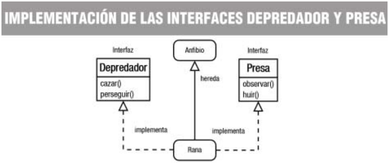
De este modo, con el mecanismo "una herencia pero varias interfaces", podrían conseguirse resultados similares a los obtenidos con la herencia múltiple.
Ahora bien, del mismo modo que sucedía con la herencia múltiple, puede darse el problema de la colisión de nombres al implementar dos interfaces que tengan un método con el mismo identificador. En tal caso puede suceder lo siguiente:
- Si los dos métodos tienen diferentes parámetros no habrá problema aunque tengan el mismo nombre pues se realiza una sobrecarga de métodos.
- Si los dos métodos tienen un valor de retorno de un tipo diferente, se producirá un error de compilación (al igual que sucede en la sobrecarga cuando la única diferencia entre dos métodos es ésa).
Si los dos métodos son exactamente iguales en identificador, parámetros y tipo devuelto, entonces solamente se podrá implementar uno de los dos métodos. En realidad se trata de un solo método pues ambos tienen la misma interfaz (mismo identificador, mismos parámetros y mismo tipo devuelto).
¡Cuidado!
La utilización de nombres idénticos en diferentes interfaces que pueden ser implementadas a la vez por una misma clase puede causar, además del problema de la colisión de nombres, dificultades de legibilidad en el código, pudiendo dar lugar a confusiones. Si es posible intenta evitar que se produzcan este tipo de situaciones.
Herencia de interfaces.¶
Las interfaces, al igual que las clases, también permiten la herencia. Para indicar que una interfaz hereda de otra se indica nuevamente con la palabra reservada extends. Pero en este caso sí se permite la herencia múltiple de interfaces. Si se hereda de más de una interfaz se indica con la lista de interfaces separadas por comas.
Por ejemplo, dadas las interfaces InterfazUno e InterfazDos:
1 2 3 4 5 6 7 | |
Podría definirse una nueva interfaz que heredara de ambas:
1 2 3 | |
Revisa el Ejemplo16 para ver herencia de interfaces.
Revisa el Ejemplo17 para ver diseño de interfaz e implementación.
Revisa el Ejemplo18 para ver un ejemplo completo de herencia de interfaces con constantes.
Funciones Lambda¶
Tal y como vimos en la unidad anterior, la implementación de los métodos de interfaces es muy susceptible de serlo a través de funciones lambda.
Imaginemos una clase Persona:
1 2 3 4 5 | |
personas formada por objetos de tipo Persona: 1 2 3 4 5 6 7 8 | |
ArrayList de personas de mayor a menor edad usando... Implementación "tradicional" java: Comparator oComparable 1 2 3 4 5 6 7 8 | |
1 2 3 4 5 6 | |
1 2 3 4 5 6 | |
Polimorfismo¶
El polimorfismo es otro de los grandes pilares sobre los que se sustenta la Programación Orientada a Objetos (junto con la encapsulación y la herencia). Se trata nuevamente de otra forma más de establecer diferencias entre interfaz e implementación, es decir, entre el qué y el cómo.
La encapsulación te ha permitido agrupar características (atributos) y comportamientos (métodos) dentro de una misma unidad (clase), pudiendo darles un mayor o menor componente de visibilidad, y permitiendo separar al máximo posible la interfaz de la implementación.
Por otro lado la herencia te ha proporcionado la posibilidad de tratar a los objetos como pertenecientes a una jerarquía de clases. Esta capacidad va a ser fundamental a la hora de poder manipular muchos posibles objetos de clases diferentes como si fueran de la misma clase (polimorfismo).
El polimorfismo te va a permitir mejorar la organización y la legibilidad del código así como la posibilidad de desarrollar aplicaciones que sean más fáciles de ampliar a la hora de incorporar nuevas funcionalidades. Si la implementación y la utilización de las clases es lo suficientemente genérica y extensible será más sencillo poder volver a este código para incluir nuevos requerimientos.
Concepto de polimorfismo.¶
El polimorfismo consiste en la capacidad de poder utilizar una referencia a un objeto de una determinada clase como si fuera de otra clase (en concreto una subclase). Es una manera de decir que una clase podría tener varias (poli) formas (morfismo).
Un método "polimórfico" ofrece la posibilidad de ser distinguido (saber a qué clase pertenece) en tiempo de ejecución en lugar de en tiempo de compilación. Para poder hacer algo así es necesario utilizar métodos que pertenecen a una superclase y que en cada subclase se implementan de una forma en particular. En tiempo de compilación se invocará al método sin saber exactamente si será el de una subclase u otra (pues se está invocando al de la superclase). Sólo en tiempo de ejecución (una vez instanciada una u otra subclase) se conocerá realmente qué método (de qué subclase) es el que finalmente va a ser invocado.
Esta forma de trabajar te va a permitir hasta cierto punto "desentenderte" del tipo de objeto específico (subclase) para centrarte en el tipo de objeto genérico (superclase). De este modo podrás manipular objetos hasta cierto punto "desconocidos" en tiempo de compilación y que sólo durante la ejecución del programa se sabrá exactamente de qué tipo de objeto (subclase) se trata.
Polimorfismo
El polimorfismo ofrece la posibilidad de que toda referencia a un objeto de una superclase pueda tomar la forma de una referencia a un objeto de una de sus subclases. Esto te va a permitir escribir programas que procesen objetos de clases que formen parte de la misma jerarquía como si todos fueran objetos de sus superclases.
Más polimorfismo
El polimorfismo puede llevarse a cabo tanto con superclases (abstractas o no) como con interfaces.
Dada una superclase X, con un método m, y dos subclases A y B, que redefinen ese método m, podrías declarar un objeto O de tipo X que durante la ejecución podrá ser de tipo A o de tipo B (algo desconocido en tiempo de compilación). Esto significa que al invocarse el método m de X (superclase), se estará en realidad invocando al método m de A o de B (alguna de sus subclases). Por ejemplo:
1 2 3 4 5 6 7 8 9 10 11 12 13 14 15 16 17 18 19 20 21 | |
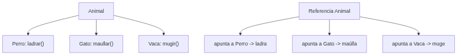
Imagina que estás trabajando con las clases Alumno y Profesor y que en determinada zona del código podrías tener objetos, tanto de un tipo como de otro, pero eso sólo se sabrá según vaya discurriendo la ejecución del programa. En algunos casos, es posible que un determinado objeto pudiera ser de la clase Alumno y en otros de la clase Profesor, pero en cualquier caso serán objetos de la clase Persona. Eso significa que la llamada a un método de la clase Persona (por ejemplo devolverContenidoString) en realidad será en unos casos a un método (con el mismo nombre) de la clase Alumno y, en otros, a un método (con el mismo nombre también) de la clase Profesor. Esto será posible hacerlo gracias a la ligadura dinámica.
Ligadura dinámica.¶
La conexión que tiene lugar durante una llamada a un método suele ser llamada ligadura (conexión o vinculación que tiene lugar durante una llamada a un método para saber qué código debe ser ejecutado. Puede ser estática o dinámica, vinculación o enlace (en inglés binding). Si esta vinculación se lleva a cabo durante el proceso de compilación, se le suele llamar ligadura estática (la vinculación que se produce en la llamada a un método con la clase a la que pertenece ese método se realiza en tiempo de compilación. Es decir, que antes de generar el código ejecutable se conoce exactamente el método (a qué clase pertenece) que será llamado. También conocido como vinculación temprana). En los lenguajes tradicionales, no orientados a objetos, ésta es la única forma de poder resolver la ligadura (en tiempo de compilación). Sin embargo, en los lenguajes orientados a objetos existe otra posibilidad: la ligadura dinámica (la vinculación que se produce en la llamada a un método con la clase a la que pertenece ese método se realiza en tiempo de ejecución. Es decir, que al generar el código ejecutable no se conoce exactamente el método (a qué clase pertenece) que será llamado. Sólo se sabrá cuando el programa esté en ejecución. También conocida como vinculación tardía, enlace tardío o late binding.
La ligadura dinámica hace posible que sea el tipo de objeto instanciado (obtenido mediante el constructor finalmente utilizado para crear el objeto) y no el tipo de la referencia (el tipo indicado en la declaración de la variable que apuntará al objeto) lo que determine qué versión del método va a ser invocada. El tipo de objeto al que apunta la variable de tipo referencia sólo podrá ser conocido durante la ejecución del programa y por eso el polimorfismo necesita la ligadura dinámica.
En el ejemplo anterior de la clase X y sus subclases A y B, la llamada al método m sólo puede resolverse mediante ligadura dinámica, pues es imposible saber en tiempo de compilación si el método m que debe ser invocado será el definido en la subclase A o el definido en la subclase B:
1 2 | |
Revisa el Ejemplo20 para ver polimorfismo con instrumentos.
Limitaciones de la ligadura dinámica.¶
Como has podido comprobar, el polimorfismo se basa en la utilización de referencias de un tipo más "amplio" (superclases) que los objetos a los que luego realmente van a apuntar (subclases). Ahora bien, existe una importante restricción en el uso de esta capacidad, pues el tipo de referencia limita cuáles son los métodos que se pueden utilizar y los atributos a los que se pueden acceder.
Importante
No se puede acceder a los miembros específicos de una subclase a través de una referencia a una superclase. Sólo se pueden utilizar los miembros declarados en la superclase, aunque la definición que finalmente se utilice en su ejecución sea la de la subclase.
Veamos un ejemplo: si dispones de una clase Profesor que es subclase de Persona y declaras una variable como referencia un objeto de tipo Persona. Aunque más tarde esa variable haga referencia a un objeto de tipo Profesor (subclase), los miembros a los que podrás acceder sin que el compilador produzca un error serán los miembros de Profesor que hayan sido heredados de Persona (superclase). De este modo, se garantiza que los métodos que se intenten llamar van a existir cualquiera que sea la subclase de Persona a la que se apunte desde esa referencia.
En el ejemplo de las clases Persona, Profesor y Alumno, el polimorfismo nos permitiría declarar variables de tipo Persona y más tarde hacer con ellas referencia a objetos de tipo Profesor o Alumno, pero no deberíamos intentar acceder con esa variable a métodos que sean específicos de la clase Profesor o de la clase Alumno, tan solo a métodos que sabemos que van a existir seguro en ambos tipos de objetos (métodos de la superclase Persona).
Revisa el Ejemplo21 para ver polimorfismo con Persona, Alumno y Profesor.
Interfaces y polimorfismo.¶
Es posible también llevar a cabo el polimorfismo mediante el uso de interfaces. Un objeto puede tener una referencia cuyo tipo sea una interfaz, pero para que el compilador te lo permita, la clase cuyo constructor se utilice para crear el objeto deberá implementar esa interfaz (bien por si misma o bien porque la implemente alguna superclase). Un objeto cuya referencia sea de tipo interfaz sólo puede utilizar aquellos métodos definidos en la interfaz, es decir, que no podrán utilizarse los atributos y métodos específicos de su clase, tan solo los de la interfaz.
Las referencias de tipo interfaz permiten unificar de una manera bastante estricta la forma de utilizarse de objetos que pertenezcan a clases muy diferentes (pero que todas ellas implementan la misma interfaz). De este modo podrías hacer referencia a diferentes objetos que no tienen ninguna relación jerárquica entre sí utilizando la misma variable (referencia a la interfaz). Lo único que los distintos objetos tendrían en común es que implementan la misma interfaz.
Recuerda
En este caso sólo podrás llamar a los métodos de la interfaz y no a los específicos de las clases.
Por ejemplo, si tenías una variable de tipo referencia a la interfaz Arrancable, podrías instanciar objetos de tipo Coche o Motosierra y asignarlos a esa referencia (teniendo en cuenta que ambas clases no tienen una relación de herencia). Sin embargo, tan solo podrás usar en ambos casos los métodos y los atributos de la interfaz Arrancable (por ejemplo arrancar) y no los de Coche o los de Motosierra (sólo los genéricos, nunca los específicos).
En el caso de las clases Persona, Alumno y Profesor, podrías declarar, por ejemplo, variables del tipo Imprimible:
1 | |
Con este tipo de referencia podrías luego apuntar a objetos tanto de tipo Profesor como de tipo Alumno, pues ambos implementan la interfaz Imprimible:
1 2 3 4 5 6 7 | |
Y más adelante hacer uso de la ligadura dinámica:
1 2 3 | |
Conversión de objetos.¶
Como ya has visto, en principio no se puede acceder a los miembros específicos de una subclase a través de una referencia a una superclase. Si deseas tener acceso a todos los métodos y atributos específicos del objeto subclase tendrás que realizar una conversión explícita (casting) que convierta la referencia más general (superclase) en la del tipo específico del objeto (subclase).
Para que puedas realizar conversiones entre distintas clases es obligatorio que exista una relación de herencia entre ellas (una debe ser clase derivada de la otra). Se realizará una conversión implícita o automática de subclase a superclase siempre que sea necesario, pues un objeto de tipo subclase siempre contendrá toda la información necesaria para ser considerado un objeto de la superclase.
Ahora bien, la conversión en sentido contrario (de superclase a subclase) debe hacerse de forma explícita y según el caso podría dar lugar a errores por falta de información (atributos) o de métodos. En tales casos se produce una excepción de tipo ClassCastException.
Por ejemplo, imagina que tienes una clase Animal y una clase Besugo, subclase de Animal:
1 2 3 4 5 6 | |
A continuación declaras una variable referencia a la clase Animal (superclase) pero sin embargo le asignas una referencia a un objeto de la clase Besugo (subclase) haciendo uso del polimorfismo:
1 2 | |
El objeto que acabas de crear como instancia de la clase Besugo (subclase de Animal) contiene más información que la que la referencia obj te permite en principio acceder sin que el compilador genere un error (pues es de clase Animal). En concreto los objetos de la clase Besugo disponen de nombre y peso, mientras que los objetos de la clase Animal sólo de nombre. Para acceder a esa información adicional de la clase especializada (peso) tendrás que realizar una conversión explícita (casting):
1 2 | |
Sin embargo si se hubiera tratado de una instancia de la clase Animal y hubieras intentado acceder al miembro peso, se habría producido una excepción de tipo ClassCastException:
1 2 3 4 5 6 7 8 9 | |
Ejemplos UD08¶
Ejemplo01¶
Composición de clases: refactorización de Rectangulo con Punto
Intenta rescribir los siguientes los métodos de la clase Rectangulo teniendo en cuenta ahora su nueva estructura de atributos (dos objetos de la clase Punto, en lugar de cuatro elementos de tipo double):
- Método
calcularSuperfice, que calcula y devuelve el área de la superficie encerrada por la figura. - Método
calcularPerimetro, que calcula y devuelve la longitud del perímetro de la figura.
En ambos casos la interfaz no se ve modificada en absoluto (desde fuera su funcionamiento es el mismo), pero internamente deberás tener en cuenta que ya no existen los atributos x1, y1, x2, y2, de tipo double, sino los atributos vertice1 y vertice2 de tipo Punto.
Clase Punto:
1 2 3 4 5 6 7 8 9 10 11 12 13 14 15 16 17 18 19 20 21 22 23 24 25 26 27 | |
Clase Rectangulo:
1 2 3 4 5 6 7 8 9 10 11 12 13 14 15 16 17 18 19 20 21 22 23 | |
En la siguiente presentación puedes observar detalladamente el proceso completo de elaboración de la clase Rectangulo haciendo uso de la clase Punto:
- Objetos de tipo
Rectangulocompuesto por objetos de tipoPunto
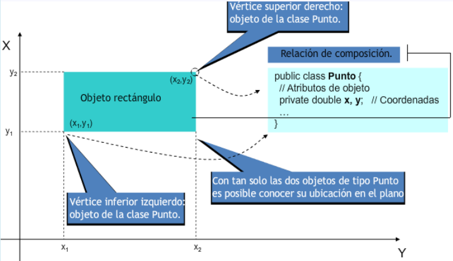
- Atributos de un objeto
Rectangulocompuesto por objetos de tipoPunto
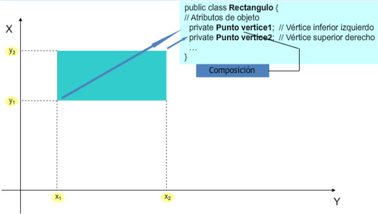
- Clase
Rectangulo
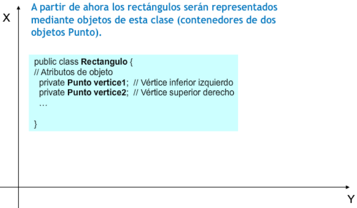
- Método
calcularSuperficie
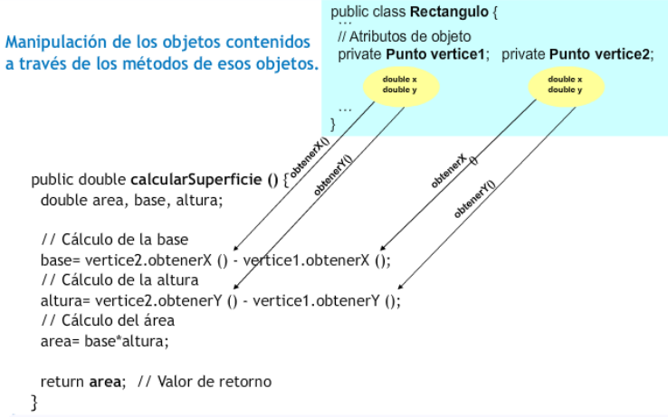
Ejemplo02¶
Composición de clases: métodos de obtención de vértices
Dada la clase Rectangulo, escribe sus nuevos métodos obtenerVertice1 y obtenerVertice2 para que devuelvan los vértices inferior izquierdo y superior derecho del rectángulo (objetos de tipo Punto), teniendo en cuenta su nueva estructura de atributos (dos objetos de la clase Punto, en lugar de cuatro elementos de tipo double):
Los métodos de obtención de vértices devolverán objetos de la clase Punto:
1 2 3 4 5 6 7 | |
Esto funcionaría perfectamente, pero deberías tener cuidado con este tipo de métodos que devuelven directamente una referencia a un objeto atributo que probablemente has definido como privado. Estás de alguna manera haciendo público un atributo que fue declarado como privado.
Para evitar que esto suceda bastaría con crear un nuevo objeto que fuera una copia del atributo que se desea devolver (en este caso un objeto de la clase Punto).
Aquí tienes la solución para la nueva clase Rectangulo:
1 2 3 4 5 6 7 8 9 10 11 12 13 14 15 16 17 18 19 20 21 22 23 24 25 26 27 28 29 30 31 32 33 34 35 36 37 38 39 40 41 42 43 44 45 46 47 48 49 50 51 52 53 54 55 56 57 58 59 60 61 62 63 64 65 66 67 68 69 70 71 72 73 74 75 76 77 78 79 | |
De esta manera, se devuelve un punto totalmente nuevo que podrá ser manipulado sin ningún temor por parte del código cliente de la clase pues es una copia para él.
Ejemplo03¶
Constructores de Rectangulo con composición de Punto
Intenta rescribir los constructores de la clase Rectangulo teniendo en cuenta ahora su nueva estructura de atributos (dos objetos de la clase Punto, en lugar de cuatro elementos de tipo double): 1. Un constructor sin parámetros (para sustituir al constructor por defecto) que haga que los valores iniciales de las esquinas del rectángulo sean (0,0) y (1,1). 2. Un constructor con cuatro parámetros, x1, y1, x2, y2, que cree un rectángulo con los vértices (x1, y1) y (x2, y2). 3. Un constructor con dos parámetros, punto1, punto2, que rellene los valores iniciales de los atributos del rectángulo con los valores proporcionados a través de los parámetros. 4. Un constructor con dos parámetros, base y altura, que cree un rectángulo donde el vértice inferior derecho esté ubicado en la posición (0,0) y que tenga una base y una altura tal y como indican los dos parámetros proporcionados. 5. Un constructor copia.
POSIBLE SOLUCIÓN
Durante el proceso de creación de un objeto (constructor) de la clase contenedora (en este caso Rectangulo) hay que tener en cuenta también la creación (llamada a constructores) de aquellos objetos que son contenidos (en este caso objetos de la clase Punto).
En el caso del primer constructor, habrá que crear dos puntos con las coordenadas (0,0) y (1,1) y asignarlos a los atributos correspondientes (vertice1 y vertice2):
1 2 3 4 | |
Para el segundo constructor habrá que crear dos puntos con las coordenadas x1, y1, x2, y2 que han sido pasadas como parámetros:
1 2 3 4 | |
En el caso del tercer constructor puedes utilizar directamente los dos puntos que se pasan como parámetros para construir los vértices del rectángulo.
Ahora bien, esto podría ocasionar un efecto colateral no deseado si esos objetos de tipo Punto son modificados en el futuro desde el código cliente del constructor (no sabes si esos puntos fueron creados especialmente para ser usados por el rectángulo o si pertenecen a otro objeto que podría modificarlos más tarde).
Por tanto, para este caso quizá fuera recomendable crear dos nuevos puntos a imagen y semejanza de los puntos que se han pasado como parámetros. Para ello tendrías dos opciones:
- Llamar al constructor de la clase Punto con los valores de los atributos (x, y).
- Llamar al constructor copia de la clase Punto, si es que se dispone de él.
Aquí tienes las dos posibles versiones:
Constructor que "extrae" los atributos de los parámetros y crea nuevos objetos:
1 2 3 4 | |
Constructor que crea los nuevos objetos mediante el constructor copia de los parámetros:
1 2 3 4 | |
En este segundo caso puedes observar la utilidad de los constructores de copia a la hora de tener que clonar objetos (algo muy habitual en las inicializaciones).
1 2 3 4 | |
Para el caso del constructor que recibe como parámetros la base y la altura, habrá que crear sendos vértices con valores (0,0) y (0 + base, 0 + altura), o lo que es lo mismo: (0,0) y (base, altura).
1 2 3 4 | |
Quedaría finalmente por implementar el constructor copia:
1 2 3 4 | |
En este caso nuevamente volvemos a clonar los atributos vertice1 y vertice2 del objeto r que se ha pasado como parámetro para evitar tener que compartir esos atributos en los dos rectángulos. Así ahora el método main que comprueba la clase Rectanclo funciona correctamente:
1 2 3 4 5 6 7 8 9 10 11 12 13 14 15 | |
Ejemplo04¶
Herencia: creación de la clase Profesor a partir de Persona
Imagina que también necesitas una clase Profesor, que contará con atributos como nombre, apellidos, fecha de nacimiento, salario y especialidad. ¿Cómo crearías esa nueva clase y qué atributos le añadirías?
Está claro que un Profesor es otra especialización de Persona, al igual que lo era Alumno, así que podrías crear otra clase derivada de Persona y así aprovechar los atributos genéricos (nombre, apellidos, fecha de nacimiento) que posee todo objeto de tipo Persona. Tan solo faltaría añadirle sus atributos específicos (salario y especialidad):
1 2 3 4 5 | |
Ejemplo05¶
Herencia: uso de protected en atributos
Reescribe las clases Alumno y Profesor utilizando el modificador protected para sus atributos del mismo modo que se ha hecho para su superclase Persona 1. Clase Alumno. Se trata simplemente de añadir el modificador de acceso protected a los nuevos atributos que añade la clase.
1 2 3 4 5 | |
- Clase
Profesor. Exactamente igual que en la claseAlumno.
1 2 3 4 5 | |
Ejemplo06¶
Getters y setters en herencia
Dadas las clases Alumno y Profesor que has utilizado anteriormente, implementa métodos get y set en las clases Alumno y Profesor para trabajar con sus cinco atributos (tres heredados más dos específicos).
POSIBLE SOLUCIÓN
- Clase
Alumno. Se trata de heredar de la clase Persona y por tanto utilizar con normalidad sus atributos heredados como si pertenecieran a la propia clase (de hecho se puede considerar que le pertenecen, dado que los ha heredado).
1 2 3 4 5 6 7 8 9 10 11 12 13 14 15 16 17 18 19 20 21 22 23 24 25 26 27 28 29 30 31 32 33 34 35 36 37 38 39 40 41 42 43 44 45 46 47 48 49 50 51 52 53 54 55 56 57 58 | |
Si te fijas, puedes utilizar sin problema la referencia this a la propia clase con esos atributos heredados, pues pertenecen a la clase: this.nombre, this.apellidos, etc.
- Clase
Profesor. Seguimos exactamente el mismo procedimiento que con la clase Alumno.
1 2 3 4 5 6 7 8 9 10 11 12 13 14 15 16 17 18 19 20 21 22 23 24 25 26 27 28 29 30 31 32 33 34 35 36 37 38 39 40 41 42 43 44 45 46 47 48 49 50 51 52 53 54 55 56 57 58 | |
Una conclusión que puedes extraer de este código es que has tenido que escribir los métodos get y set para los tres atributos heredados, pero ¿no habría sido posible definir esos seis métodos en la clase base y así estas dos clases derivadas hubieran también heredado esos métodos? La respuesta es afirmativa y de hecho es como lo vas a hacer a partir de ahora. De esa manera te habrías evitado tener que escribir seis métodos en la clase Alumno y otros seis en la clase Profesor.
Recuerda
Así que recuerda: se pueden heredar tanto los atributos como los métodos.
Aquí tienes un ejemplo de cómo podrías haber definido la clase Persona para que luego se hubieran podido heredar de ella sus métodos (y no sólo sus atributos):
1 2 3 4 5 6 7 8 9 10 11 12 13 14 15 16 17 18 19 20 21 22 23 24 25 26 27 28 29 30 31 32 33 34 35 36 37 38 39 | |
Ejemplo07¶
Getters y setters heredados
Dadas las clases Persona, Alumno y Profesor que has utilizado anteriormente, implementa métodos get y set en la clase Persona para trabajar con sus tres atributos y en las clases Alumno y Profesor para manipular sus cinco atributos (tres heredados más dos específicos), teniendo en cuenta que los métodos que ya hayas definido para Persona van a ser heredados en Alumno y en Profesor.
- Clase
Persona.
1 2 3 4 5 6 7 8 9 10 11 12 13 14 15 16 17 18 19 20 21 22 23 24 25 26 27 28 29 30 31 32 33 34 35 36 37 38 39 | |
- Clase
Alumno. Al heredar de la clase Persona tan solo es necesario escribir métodos para los nuevos atributos (métodos especializados de acceso a los atributos especializados), pues los métodos genéricos (de acceso a los atributos genéricos) ya forman parte de la clase al haberlos heredado.
1 2 3 4 5 6 7 8 9 10 11 12 13 14 15 16 17 18 19 20 21 22 23 24 25 26 | |
- Clase
Profesor. Seguimos exactamente el mismo procedimiento que con la clase Alumno.
1 2 3 4 5 6 7 8 9 10 11 12 13 14 15 16 17 18 19 20 21 22 23 24 25 26 | |
Ejemplo08¶
Redefinición del método getNombre
Dadas las clases Persona, Alumno y Profesor que has utilizado anteriormente, redefine el método getNombre para que devuelva la cadena "Alumno: ", junto con el nombre del alumno, si se trata de un objeto de la clase Alumno o bien "Profesor ", junto con el nombre del profesor, si se trata de un objeto de la clase Profesor.
- Clase
Alumno. Al heredar de la clase Persona tan solo es necesario escribir métodos para los nuevos atributos (métodos especializados de acceso a los atributos especializados), pues los métodos genéricos (de acceso a los atributos genéricos) ya forman parte de la clase al haberlos heredado. Esos son los métodos que se implementaron en el ejercicio anterior (getGrupo,setGrupo, etc.).
Ahora bien, hay que escribir otro método más, pues tienes que redefinir el método getNombre para que tenga un comportamiento un poco diferente al getNombre que se hereda de la clase base Persona:
1 2 3 4 5 | |
En este caso podría decirse que se "renuncia" al método heredado para redefinirlo con un comportamiento más especializado y acorde con la clase derivada.
- Clase
Profesor. Seguimos exactamente el mismo procedimiento que con la clase Alumno (redefinición del métodogetNombre).
1 2 3 4 5 | |
Ejemplo09¶
Método mostrar con llamada a super
Dadas las clases Persona, Alumno y Profesor, define un método mostrar para la clase Persona, que muestre el contenido de los atributos (datos personales) de un objeto de la clase Persona. A continuación, define sendos métodos mostrar especializados para las clases Alumno y Profesor que "amplíen" la funcionalidad del método mostrar original de la clase Persona. 1. Método mostrar de la clase Persona.
1 2 3 4 5 6 7 8 | |
-
Método mostrar de la clase
Profesor. Llamamos al método mostrar de su clase padre (Persona) y luego añadimos la funcionalidad específica para la subclaseProfesor: ```java public void mostrar () { super.mostrar (); // Llamada al método "mostrar" de la superclase// A continuación mostramos la información "especializada" de esta subclase System.out.printf ("Especialidad: %s\n", this.especialidad); System.out.printf ("Salario: %7.2f euros\n", this.salario); } ```
-
Método mostrar de la clase
Alumno. Llamamos al método mostrar de su clase padre (Persona) y luego añadimos la funcionalidad específica para la subclaseAlumno:
1 2 3 4 5 6 | |
Ejemplo10¶
Constructor con llamada a super
Escribe un constructor para la clase Profesor que realice una llamada al constructor de su clase base para inicializar sus atributos heredados. Los atributos específicos (no heredados) sí deberán ser inicializados en el propio constructor de la clase Profesor.
1 2 3 4 5 | |
Puedes hacer lo mismo para la clase Alumno.
1 2 3 4 5 | |
Ejemplo11¶
Clase abstracta Persona
Basándote en la jerarquía de clases de ejemplo (Persona, Alumno, Profesor), que ya has utilizado en otras ocasiones, modifica lo que consideres oportuno para que Persona sea, a partir de ahora, una clase abstracta (no instanciable) y las otras dos clases sigan siendo clases derivadas de ella, pero sí instanciables.
En este caso lo único que habría que hacer es añadir el modificador abstract a la clase Persona. El resto de la clase permanecería igual y las clases Alumno y Profesor no tendrían porqué sufrir ninguna modificación.
1 2 3 4 5 6 | |
A partir de ahora no podrán existir objetos de la clase Persona. El compilador generaría un error.
Localiza en la API de Java algún ejemplo de clase abstracta.
Existen una gran cantidad de clases abstractas en la API de Java. Aquí tienes un par de ejemplos:
-
La clase
AbstractList:1public abstract class AbstractList<E> extends AbstractCollection<E> implements List<E>De la que heredan clases instanciable como
VectoroArrayList. -
La clase
AbstractSequentialList:
1 | |
Que hereda de AbstractList y de la que hereda la clase LinkedList
Ejemplo12¶
Método abstracto mostrar en Persona
Basándote en la jerarquía de clases Persona, Alumno, Profesor, crea un método abstracto llamado mostrar para la clase Persona. Dependiendo del tipo de persona (alumno o profesor) el método mostrar tendrá que mostrar unos u otros datos personales (habrá que hacer implementaciones específicas en cada clase derivada).
Una vez hecho esto, implementa completamente las tres clases (con todos sus atributos y métodos) y utilízalas en un pequeño programa de ejemplo que cree un objeto de tipo Alumno y otro de tipo Profesor, los rellene con información y muestre esa información en la pantalla a través del método mostrar.
Dado que el método mostrar no va a ser implementado en la clase Persona, será declarado como abstracto y no se incluirá su implementación:
1 | |
Recuerda que el simple hecho de que la clase Persona contenga un método abstracto hace que la clase sea abstracta (y deberá indicarse como tal en su declaración):
1 2 | |
En el caso de la clase Alumno habrá que hacer una implementación específica del método mostrar y lo mismo para el caso de la clase Profesor.
- Método mostrar para la clase
Alumno.
1 2 3 4 5 6 7 8 9 10 11 | |
- Método mostrar para la clase
Profesor.
1 2 3 4 5 6 7 8 9 10 11 | |
- Programa de ejemplo de uso.
Un pequeño programa de ejemplo de uso del método mostrar en estas dos clases podría ser:
1 2 3 4 5 6 7 8 9 10 11 12 13 14 15 16 17 | |
1 2 3 4 5 6 7 8 9 10 | |
Ejemplo13¶
Creación de la interfaz Imprimible
Crea una interfaz en Java cuyo nombre sea Imprimible y que contenga algunos métodos útiles para mostrar el contenido de una clase:
- Método
devolverContenidoString, que crea unStringcon una representación de todo el contenido público (o que se decida que deba ser mostrado) del objeto y lo devuelve. El formato será una lista de pares "nombre=valor" de cada atributo separado por comas y la lista completa encerrada entre llaves: "{<nombre_atributo_1>=<valor_atributo_1>, ..., <nombre_atributo_n>=<valor_atributo_n>}". - Método
devolverContenidoArrayList, que crea unArrayListdeStringcon una representación de todo el contenido público (o que se decida que deba ser mostrado) del objeto y lo devuelve. - Método
devolverContenidoHashMap, similar al anterior, pero en lugar devolver en unArrayListlos valores de los atributos, se devuelve en unaHashMapen forma de pares (nombre,valor).
Se trata simplemente de declarar la interfaz e incluir en su interior esos tres métodos:
1 2 3 4 5 6 7 8 9 10 | |
Ejemplo14¶
Implementación de Imprimible en Alumno y Profesor
Haz que las clases Alumno y Profesor implementen la interfaz Imprimible que se ha escrito en el ejercicio anterior.
La primera opción que se te puede ocurrir es pensar que en ambas clases habrá que indicar que implementan la interfaz Imprimible y por tanto definir los métodos que ésta incluye: devolverContenidoString, devolverContenidoHashMap y devolverContenidoArrayList.
Si las clases Alumno y Profesor no heredaran de la misma clase habría que hacerlo obligatoriamente así, pues no comparten superclase y precisamente para eso sirven las interfaces: para implementar determinados comportamientos que no pertenecen a la estructura jerárquica de herencia en la que se encuentra una clase (de esta manera, clases que no tienen ninguna relación de herencia podrían compartir interfaz).
Pero en este caso podríamos aprovechar que ambas clases sí son subclases de una misma superclase (heredan de la misma) y hacer que la interfaz Imprimible sea implementada directamente por la superclase (Persona) y de este modo ahorrarnos bastante código. Así no haría falta indicar explícitamente que Alumno y Profesor implementan la interfaz Imprimible, pues lo estarán haciendo de forma implícita al heredar de una clase que ya ha implementado esa interfaz (la clase Persona, que es padre de ambas).
Una vez que los métodos de la interfaz estén implementados en la clase Persona, tan solo habrá que redefinir o ampliar los métodos de la interfaz para que se adapten a cada clase hija específica (Alumno o Profesor), ahorrándonos tener que escribir varias veces la parte de código que obtiene los atributos genéricos de la clase Persona.
- Clase
Persona.
Indicamos que se va a implementar la interfaz Imprimible:
1 2 | |
Definimos el método devolverContenidoHashMap a la manera de como debe ser implementado para la clase Persona. Podría quedar, por ejemplo, así:
1 2 3 4 5 6 7 8 9 10 11 12 13 | |
Del mismo modo, definimos también el método devolverContenidoArrayList:
1 2 3 4 5 6 7 8 9 10 11 12 13 | |
Y por último el método devolverContenidoString:
1 2 3 4 5 6 7 | |
- Clase
Alumno.
Esta clase hereda de la clase Persona, de manera que heredará los tres métodos anteriores. Tan solo habrá que redefinirlos para que, aprovechando el código ya escrito en la superclase, se añada la funcionalidad específica que aporta esta subclase.
1 2 | |
Como puedes observar no ha sido necesario incluir el implements Imprimible, pues el extends Persona lo lleva implícito dado que Persona ya implementaba ese interfaz. Lo que haremos entonces será llamar al método que estamos redefiniendo utilizando la referencia a la superclase super.
El método devolverContenidoHashMap podría quedar, por ejemplo, así:
1 2 3 4 5 6 7 8 9 10 | |
-
Clase
Profesor. En este caso habría que proceder exactamente de la misma manera que con la clase Alumno: redefiniendo los métodos de la interfazImprimiblepara añadir la funcionalidad específica que aporta esta subclase, en este caso mostraremos la redifinición del métododevolverContenidoArrayList():1 2 3 4 5 6 7 8 9 10
@Override public ArrayList devolverContenidoArrayList() { // Llamada al método de la superclase ArrayList contenido = super.devolverContenidoArrayList(); // Añadimos los atributos específicos de la clase contenido.add(this.especialidad); contenido.add(this.salario); // Devolvemos la ArrayList return contenido; }y la redefinición del método
devolverContenidoString():1 2 3 4 5 6 7 8 9 10
@Override public String devolverContenidoString() { // Llamada al método de la superclase String contenido = super.devolverContenidoString(); //Eliminamos el último carácter, que contiene una llave de cierre. contenido = contenido.substring(0, contenido.length() - 1); contenido = contenido + ", " + this.especialidad + ", " + this.salario + "}"; // Devolvemos el String creado. return contenido; }
Ejemplo15¶
Una clase que implementa varias interfaces
¿Puede una clase implementar varias interfaces diferentes a la vez?
Observa el siguiente esquema UML:
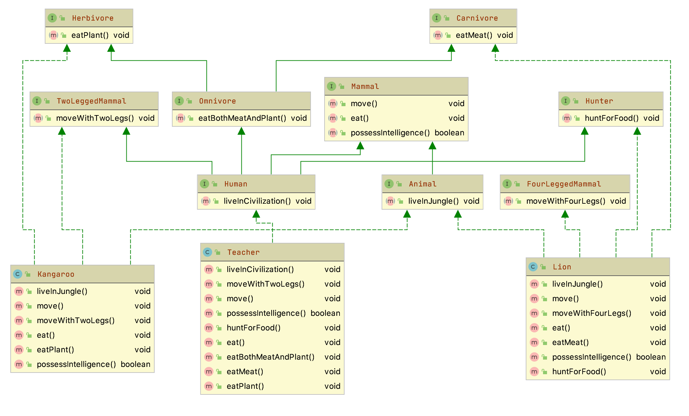
Las clases Kangaroo y Lion implementan varias clases:
Kangaroo:Herbivore,TwoLeggedMammalyAnimalLion:Animal,FourLeggedMammal,HunteryCarnivore
Ejemplo16¶
Herencia de interfaces
¿Puede una interfaz heredar de varias interfaces diferentes a la vez?
Observa el siguiente esquema UML:
Las interfaces Human y Omnivore heredan de varias interfaces:
Human: deTwoLeggedMammal,Omnivore,MammalyHunterOmnivore:HerbivoreyCarnivore
Ejemplo17¶
Diseño de interfaz e implementación en una clase
Supongamos una situación en la que nos interesa dejar constancia de que ciertas clases deben implementar una funcionalidad teórica determinada, diferente en cada clase afectada. Estamos hablando, pues, de la definición de un método teórico que algunas clases deberán implementar.
Un ejemplo real puede ser el método calculoImporteJubilacion() aplicable, de manera diferente, a muchas tipologías de trabajadores y, por tanto, podríamos pensar en diseñar una clase Trabajador en que uno de sus métodos fuera calculoImporteJubilacion(). Esta solución es válida si estamos diseñando una jerarquía de clases a partir de la clase Trabajador de la que cuelguen las clases correspondientes a las diferentes tipologías de trabajadores (metalúrgicos, hostelería, informáticos, profesores...). Además, disponemos del concepto de clase abstracta que cada subclase implemente obligatoriamente el método calculoImporteJubilacion().
Pero, ¿y si resulta que ya tenemos las clases Profesor, Informatico, Hostelero en otras jerarquías de clases? La solución consiste en hacer que estas clases derivaran de la clase Trabajador, sin abandonar la derivación que pudieran tener, sería factible en lenguajes orientados a objetos que soportaran la herencia múltiple, pero esto no es factible en el lenguaje Java.
Para superar esta limitación, Java proporciona las interfaces.
Definición
Una interfaz es una maqueta contenedora de una lista de métodos abstractos y datos miembro (de tipos primitivos o de clases). Los atributos, si existen, son implícitamente consideradas static y final. Los métodos, si existen, son implícitamente considerados public.
Para entender en qué nos pueden ayudar las interface, necesitamos saber:
-
Una interfaz puede ser implementada por múltiples clases, de manera similar a como una clase puede ser superclase de múltiples clases.
-
Las clases que implementan una interfaz están obligadas a sobrescribir todos los métodos definidos en la interfaz. Si la definición de alguno de los métodos a sobrescribir coincide con la definición de algún método heredado, este desaparece de la clase.
-
Una clase puede implementar múltiples interfaces, a diferencia de la derivación, que sólo se permite una única clase base.
-
Una interfaz introduce un nuevo tipo de dato, por la que nunca habrá ninguna instancia, pero sí objetos usuarios de la interfaz (objetos de las clases que implementan la interfaz). Todas las clases que implementan una interfaz son compatibles con el tipo introducido por la interfaz.
-
Una interfaz no proporciona ninguna funcionalidad a un objeto (ya que la clase que implementa la interfaz es la que debe definir la funcionalidad de todos los métodos), pero en cambio proporciona la posibilidad de formar parte de la funcionalidad de otros objetos (pasándola por parámetro en métodos de otras clases).
-
La existencia de las interfaces posibilita la existencia de una jerarquía de tipo (que no debe confundirse con la jerarquía de clases) que permite la herencia múltiple.
-
Una interfaz no se puede instanciar, pero sí se puede hacer referencia.
Importante
Así, si I es una interfaz y C es una clase que implementa la interfaz, se pueden declarar referencias al tipo I que apunten objetos de C:
1 | |
Las interfaces pueden heredar de otras interfaces y, a diferencia de la derivación de clases, pueden heredar de más de una interfaz.
Así, si diseñamos la interfaz Trabajador, podemos hacer que las clases ya existentes (Profesor, Informatico, Hostelero ...) la implementen y, por tanto, los objetos de estas clases, además de ser objetos de las superclases respectivas, pasan a ser considerados objetos usuarios del tipo Trabajador. Con esta actuación nos veremos obligados a implementar el método calculoImporteJubilacion() a todas las clases que implementen la interfaz.
Alguien no experimentado en la gestión de interfaces puede pensar: ¿por qué tanto revuelo con las interfaces si hubiéramos podido diseñar directamente un método llamado calculoImporteJubilacion() en las clases afectadas sin necesidad de definir ninguna interfaz?
La respuesta radica en el hecho de que la declaración de la interfaz lleva implícita la declaración del tipo Trabajador y, por tanto, podremos utilizar los objetos de todas las clases que implementen la interfaz en cualquier método de cualquier clase que tenga algún argumento referencia al tipo Trabajador como, por ejemplo, en un hipotético método de una hipotética clase llamada Hacienda:
1 | |
Por el hecho de existir la interfaz Trabajador, todos los objetos de las clases que la implementan (Profesor, Informatico, Hostelero ...) se pueden pasar como parámetro en las llamadas al método enviarBorradorIRPF(Trabajador t).
La sintaxis para declarar una interfaz es:
1 2 3 | |
Las interfaces también se pueden asignar a un paquete. La inexistencia del modificador de acceso público hace que la interfaz sea accesible a nivel del paquete.
Para los nombres de las interfaces, se aconseja seguir el mismo criterio que para los nombres de las clases.
Interfaces en cursiva
En la documentación de Java, las interfaces se identifican rápidamente entre las clases porque están en cursiva.
El cuerpo de la interfaz es la lista de métodos y/o constantes que contiene la interfaz. Para las constantes no hay que indicar que son static y final y para los métodos no hay que indicar que son public. Estas características se asignan implícitamente.
La sintaxis para declarar una clase que implemente una o más interfaces es:
1 2 3 | |
Los métodos de las interfaces a implementar en la clase deben ser obligatoriamente de acceso público.
Por último, comentar que, como por definición todos los datos miembro que se definen en una interfaz son static y final, y dado que las interfaz no se pueden instanciar, también resultan una buena herramienta para implantar grupos de constantes.
Así, por ejemplo:
1 2 3 4 5 | |
Esta definición nos permite utilizar las constantes declaradas en cualquier clase que implemente la interfaz, de manera tan simple como:
1 | |
Ejemplo18¶
Diseño de interfaz e implementación con herencia de interfaces.
Se presentan un par de interfaces que incorporan datos (de tipo primitivo y de referencia en clase) y métodos y una clase que las implementa. En la declaración de la clase se ve que sólo implementa la interfaz B, pero como esta interfaz deriva de la interfaz A resulta que la clase está implementando las dos interfaces.
1 2 3 4 5 6 7 8 9 10 11 12 13 14 15 16 17 18 19 20 21 22 23 24 25 26 27 28 29 30 31 32 33 34 35 36 37 38 39 40 41 42 43 | |
1 2 3 | |
El ejemplo sirve para ilustrar algunos puntos:
- Comprobamos que los datos miembro de las interfaces son
static, ya que en el métodomain()hacemos referencia al dato miembroULTIMA_CREACIONsin indicar ningún objeto de la clase. - Si hubiéramos intentado modificar los datos
VALOR_BoULTIMA_CREACIONno habríamos podido porque es final, pero en cambio sí podemos modificar el contenido del objetoDateapuntado porULTIMA_CREACION, que corresponde al momento temporal de la última creación de un objeto ya cada nueva creación se actualiza su contenido. - En las dos últimas instrucciones del método
main()vemos que podemos declarar variablespaypbde las interfaces y utilizarlas para hacer referencia a objetos de la claseEjemploInterfaz().
Ejemplo19¶
Interfaz Series con implementaciones DeDos y DeTres.
Consulta el código completo de la interfaz Series y sus implementaciones DeDos, SeriesDemo y DeTres.
1 2 3 4 5 | |
1 2 3 4 5 6 7 8 9 10 11 12 13 14 15 16 17 18 19 20 21 22 23 | |
1 2 3 4 5 6 7 8 9 10 11 12 13 14 15 16 17 18 | |
Las clases que implementan interfaces pueden definir miembros adicionales propios. Por ejemplo, la siguiente versión de DeDos agrega el método getAnterior():
1 2 3 4 5 6 7 8 9 10 11 12 13 14 15 16 17 18 19 20 21 22 23 24 25 26 27 | |
Cualquier cantidad de clases puede implementar una interfaz. Por ejemplo, DeTres genera una serie de múltiplos de tres:
1 2 3 4 5 6 7 8 9 10 11 12 13 14 15 16 17 18 19 | |
Ejemplo20¶
Polimorfismo: Instrumento, Piano y Flauta
Imagínate una clase que represente a instrumento musical genérico (Instrumento) y dos subclases que representen tipos de instrumentos específicos (por ejemplo Flauta y Piano). Todas las clases tendrán un método tocarNota, que será específico para cada subclase.
Haz un pequeño programa de ejemplo en Java que utilice el polimorfismo (referencias a la superclase que se convierten en instancias específicas de subclases) y la ligadura dinámica (llamadas a un método que aún no están resueltas en tiempo de compilación) con estas clases que representan instrumentos musicales. Puedes implementar el método tocarNota mediante la escritura de un mensaje en pantalla.
La clase Instrumento podría tener un único método (tocarNota):
1 2 3 4 5 6 7 | |
En el caso de las clases Piano y Flauta puede ser similar, heredando de Instrumento y redefiniendo el método tocarNota:
1 2 3 4 5 6 7 8 | |
1 2 3 4 5 6 7 8 | |
Creamos una clase para comprobar su funcionamiento EjemploUso:
1 2 3 4 5 6 7 8 9 10 11 12 13 14 15 16 17 18 19 20 21 22 23 24 | |
A la hora de declarar una referencia a un objeto de tipo instrumento, utilizamos la superclase (Instrumento):
1 | |
Sin embargo, a la hora de instanciar el objeto, utilizamos el constructor de alguna de sus subclases (Piano, Flauta, etc.):
1 2 3 4 5 6 7 | |
Finalmente, a la hora de invocar el método tocarNota, no sabremos a qué versión (de qué subclase) de tocarNota se estará llamando, pues dependerá del tipo de objeto (subclase) que se haya instanciado. Se estará utilizando por tanto la ligadura dinámica:
1 2 3 4 | |
Ejemplo21¶
Polimorfismo con Persona, Alumno y Profesor
Haz un pequeño programa en Java en el que se declare una variable de tipo Persona, se pidan algunos datos sobre esa persona (nombre, apellidos y si es alumno o si es profesor), y se muestren nuevamente esos datos en pantalla, teniendo en cuenta que esa variable no puede ser instanciada como un objeto de tipo Persona (es una clase abstracta) y que tendrás que instanciarla como Alumno o como Profesor. Recuerda que para poder recuperar sus datos necesitarás hacer uso de la ligadura dinámica y que tan solo deberías acceder a métodos que sean de la superclase.
Si tuviéramos diferentes variables referencia a objetos de las clases Alumno y Profesor tendrías algo así:
1 2 3 4 5 6 7 | |
Pero si pudieras tratar de una manera más genérica la situación, podrías intentar algo así:
1 2 3 4 5 | |
De esta manera la variable obj podría contener una referencia a un objeto de la superclase Persona de subclase Alumno o bien de subclase Profesor (polimorfismo).
Esto significa que independientemente del tipo de subclase que sea (Alumno o Profesor), podrás invocar a métodos de la superclase Persona y durante la ejecución se resolverán como métodos de alguna de sus subclases:
1 2 3 | |
Por último recuerda que debes de proporcionar constructores a las subclases Alumno y Profesor que sean "compatibles" con algunos de los constructores de la superclase Persona, pues al llamar a un constructor de una subclase, su formato debe coincidir con el de algún constructor de la superclase (como debe suceder en general con cualquier método que sea invocado utilizando la ligadura dinámica).
Constructor "compatible" para Alumno:
1 2 3 | |
y el constructor "compatible" para Profesor:
1 2 3 | |
Aquí tienes el ejemplo completo de la clase EjemploUso:
1 2 3 4 5 6 7 8 9 10 11 12 13 14 15 16 17 18 19 20 21 22 | |
Resumen — Conceptos clave¶
| Concepto | Definición |
|---|---|
| Composición | Relación «tiene un» entre clases (un todo contiene partes) |
| Herencia | Relación «es un» que permite reutilizar código de una superclase |
| Superclase | Clase de la que se heredan atributos y métodos |
| Subclase | Clase que hereda de otra |
| Polimorfismo | Capacidad de un objeto de comportarse de múltiples formas |
| Clase abstracta | Clase que no puede instanciarse, solo ser heredada |
| Interfaz | Contrato que define métodos que deben implementarse |
Autoevaluación¶
- Diferencio entre composición y herencia
- Creo jerarquías de herencia correctamente
- Aplico la sobrescritura de métodos (@Override)
- Utilizo el polimorfismo en mis programas
- Diseño clases abstractas y métodos abstractos
- Implemento interfaces
- Sé cuándo usar una interfaz y cuándo una clase abstracta
Vídeos recomendados¶
| Canal | Vídeo | Contenido |
|---|---|---|
| Programación ATS | Playlist POO Java | Vídeos 50–55: excepciones, try-catch, throws |
| Píldoras Informáticas | Curso Java — Excepciones | Vídeos 58–62: try-catch, finally, throw vs throws |
| MoureDev | Curso Completo de Java desde Cero | Sección de excepciones |
| makigas | Java: introducción a las excepciones | Conceptos básicos de excepciones |
| makigas | Java: throw y throws, usos y diferencias | Lanzar y delegar excepciones |